Find your way around.
Choo Choo builds a song from chains, chains from phrases, and phrases from notes played by instruments. Move along the main pages with SELECT + LEFT / RIGHT. The small screen map in the lower-right corner shows where you are.
Navigation and editing use logical control names, so your own keyboard or gamepad mappings still apply. Desktop key jazz has a separate keyboard layout, described under Phrase. SELECT is also called SHIFT in some Choo Choo help text. Check your assignments in Settings → Controls → Key mapping.
| Control | What it does |
|---|---|
| UP / DOWN / LEFT / RIGHT | Move the cursor between cells or fields. |
| EDIT | Enter a value, open a chooser, or activate the selected command. |
| EDIT + LEFT / RIGHT | Make a fine value adjustment. |
| EDIT + UP / DOWN | Make a coarse value adjustment, or open a contextual chooser. |
| SELECT + direction | Navigate between pages. |
| PLAY | Start from the cursor; press again to stop. |
| SELECT + PLAY | Start all tracks when used outside Song. |
| SELECT + EDIT | Paste copied data outside selection mode. See each page for selection and cloning controls. |
Many values use hexadecimal: after 09 comes 0A, then 0B through 0F, then 10. Phrase rows 0–F are sixteen steps.
In depth
Open a topic for detailed controls, values and workflows.
ArkOS / PortMaster
Install choochootracker.zip through PortMaster, or copy the extracted package to the console's ports directory. Start ChooChooTracker from the Ports menu.
Miyoo Mini / Mini Plus (Onion OS)
Extract the MiyooPorts archive at the root of the SD card so that its Roms/PORTS/ folders merge with Onion's existing folders. Start ChooChooTracker from the Ports menu after refreshing the collection. Back up the app's projects/ folder before replacing an existing installation.
Windows
Run choochootracker.exe with SDL2.dll and libwinpthread-1.dll in the same directory.
Press ALT + ENTER to toggle fullscreen. The window is resizable; the image
scales while keeping its original aspect ratio.
Web
The browser page follows the active tracker theme. Saved settings, including custom key mappings confirmed with Done, are written promptly to this browser's storage. After screen lock or switching apps, tap a control to recover audio if needed. Restart audio reopens the output without discarding the project. Reload app saves the current work to Continue, saves settings, and waits for browser storage before reloading; a failed or timed-out save cancels the reload. Use Download .cct for a portable backup. Browser storage can be cleared independently, and iOS controller/audio routing recovery is not guaranteed.
The browser version refreshes its display at about 30 FPS and uses a fixed 1024-frame audio buffer to give audio more time between callbacks. Older saved buffer settings are adjusted automatically; projects and other settings are preserved. Input polling and app timers keep their usual cadence.
Playback
- PLAY starts from the cursor. Press it again to stop.
- You can edit notes, instruments and chains while playing; changes are heard at the next sequencer tick.
- SELECT + PLAY starts all tracks when used outside the Song screen.
- EDIT + PLAY previews an instrument from the Instrument Pool.
Song structure and screen map
Hold SELECT + [DIRECTION] to move between screens.
The main navigation row is:
R P G M M S C P I T D S P W
Central row:
- M: Mixer (branches to Reverb, Delay)
- S: Song (branches to Project, Settings)
- C: Chain
- P: Phrase (branches to Groove)
- I: Instrument (branches to Modulation and Instrument Pool)
- T: Table (branches to the AY Wavetable editor)
Top row:
- R: Reverb
- P: Project
- G: Groove
- M: Modulation
Bottom row:
- D: Delay
- S: Settings
- P: Instrument Pool
- W: AY Wavetable editor
A ChooChooTracker song follows this hierarchy:
Song -> Chain -> Phrase row -> Note + Instrument + FX
A song has 8 tracks. Each track contains a sequence of chains, and each chain contains a sequence of phrases. Phrases are 16-step sequences of notes. A note contains a pitch, an instrument, a velocity and up to 3 track FX. An instrument is the thing that makes the sound.
Song
Main screen · S

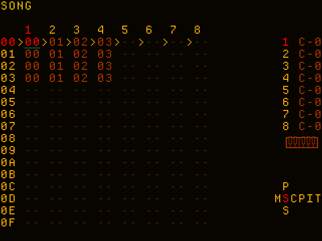
The arrangement starts here. Each column is a track, and each numbered cell plays a chain. Stack chains down a column to build a part; place them across the eight tracks to build a song.
On this screen
- Chain cells
- Choose which chain plays at each position. Reusing a chain also reuses its contents.
- Track columns
- Eight independent tracks. Keep chain lengths aligned when you want parts to stay together.
- Song rows
- Positions run from 00 to FF. Empty rows can separate sections or alternative arrangements.
| Control | What it does |
|---|---|
| Enter a chain; double-tap to create a new chain where supported. | |
| Change the chain number. With a selection, UP / DOWN moves the selected rows. | |
| Jump through the arrangement in blocks of 16 rows. | |
| Open the selected Chain. | |
| Open Project / Settings. | |
| Mute / solo the current track or selected columns. Release OPT first to keep it active. | |
| Enter or leave Live Mode. | |
| PLAY in Live Mode | Start or queue the selected chain; an empty cell queues a stop. |
| Hold SELECT, then press OPT to enter selection mode. Release both; use directions to extend the range. Repeat SELECT + OPT to cycle selection ranges. | |
| Tap and release OPT to copy selected cells and leave selection mode. | |
| Cut selected cells and leave selection mode. | |
| Hold SELECT, then press EDIT to paste copied cells at the cursor. | |
| Clone the selected chains. Their phrases remain shared. | |
| First press clones the chains; the second clones their phrases. Keep SELECT held between presses. |
An asterisk beside a chain or phrase means it is used elsewhere. Edits to reused material affect every place that uses it.
In depth
Open a topic for detailed controls, values and workflows.
Arrangement and Live Mode

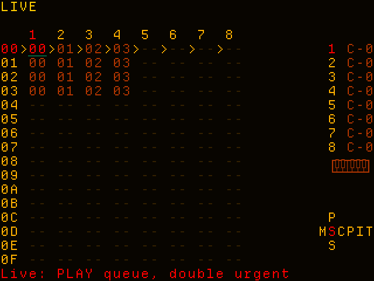
The Song screen contains 8 columns, 1 per audio track. Each cell refers to a chain. A song can contain up to 256 rows (00-FF).
Tracks run from left to right, while their chains run vertically. Each track is independent, and chains can contain from 1 to 16 phrases, so tracks can drift out of sync. Design your chains to stay together, or let them wander if that is what the track needs.
It is common to reserve 1 chain for empty phrases, usually 00 or FE.
You can keep multiple sub-songs in a project by creating "islands": sections separated by empty rows.
Live Mode
Double-tap OPT to enter or leave Live Mode; LIVE replaces the Song title. In Live Mode, PLAY starts the selected chain on its own track when that track is stopped. On a playing track, it queues the selected chain for the next chain boundary; press PLAY twice for an urgent change at the next phrase boundary. A selected empty Song cell queues a quantised stop instead. + marks a queued chain, ! an urgent chain and - a queued stop.
Select one Song row across several columns to queue or stop those tracks together. Multi-row selections are deliberately rejected. Live queues are cleared while a Song range loop is active. Live is a performance mode and is not saved in the project.
Controls
- OPT + [UP/DOWN]: jump 16 positions up or down
- Select a range, then use SELECT + EDIT: shallow-clone the chains while keeping their original phrases
- Select a range, then double-tap SELECT + EDIT: deep-clone both the chains and their phrases
- Select a range, then use EDIT + [UP/DOWN]: move the selection up or down
- Tap OPT 3 times: add or remove a highlight for visual organisation
- OPT + SHIFT: mute the current track or selected columns (release OPT first to keep the mute active)
- OPT + PLAY: solo the current track or selected columns (release OPT first to keep the solo active)
- OPT + [LEFT/RIGHT]: solo every track to the left or right of the current track
- Select a range, then double-tap EDIT: open the BOUNCE TO SAMPLE screen (see Bounce below)
Chain
Song → SELECT + RIGHT

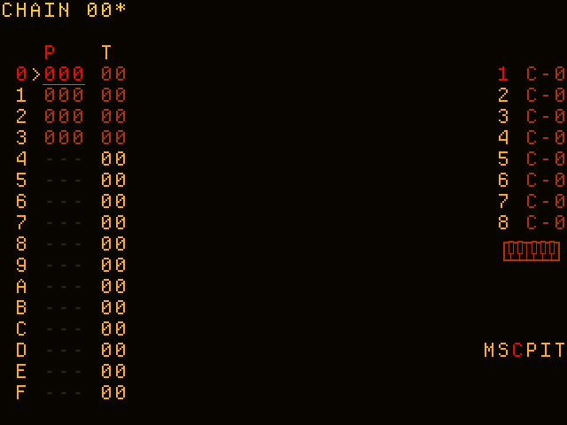
A chain joins phrases into a longer musical part. Each row chooses a phrase and can transpose it, so one pattern can become a bassline, a melody, or a chord progression without rewriting its notes.
On this screen
- P — Phrase
- The phrase number to play. A chain holds up to 16 phrase rows.
- T — Transpose
- Shift that phrase by a number of semitones.
| Control | What it does |
|---|---|
| Enter a phrase; double-tap to create a new phrase where supported. | |
| Adjust the selected phrase number or transposition. | |
| Move between tracks. | |
| Move between chains in the current track. | |
| Open Phrase / return to Song. | |
| Clone the selected phrases. | |
| Open Bounce to Sample for the selected chain rows. | |
| Hold SELECT, then press OPT to enter selection mode. Release both; use directions to extend the range. Repeat SELECT + OPT to cycle selection ranges. | |
| Tap and release OPT to copy selected cells and leave selection mode. | |
| Cut selected cells and leave selection mode. | |
| Hold SELECT, then press EDIT to paste copied cells at the cursor. |
In depth
Open a topic for detailed controls, values and workflows.
Phrase
Chain → SELECT + RIGHT

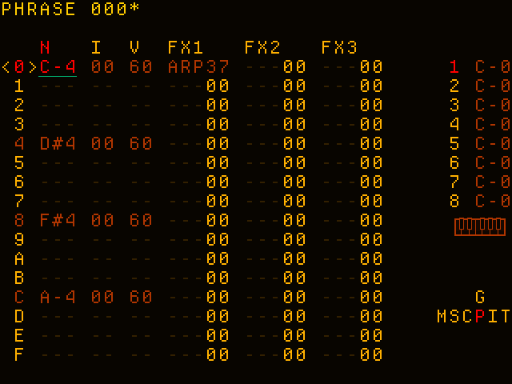
This is where you write the notes. A phrase contains 16 steps, numbered 0–F. Read each row from left to right: note, instrument, volume, then up to three effect commands.
On this screen
- N — Note
- Pitch and octave, such as C-4. A note-off ends a held note.
- I — Instrument
- The instrument that plays the note.
- V — Volume
- Step volume, from 00 to 7F. An empty value inherits the previous setting.
- FX1 / FX2 / FX3
- A command and its value. Available commands follow the instrument used on that row.
| Control | What it does |
|---|---|
| Adjust the selected note, instrument, volume, or effect value. | |
| Insert a note-off. | |
| Open the effect command browser. | |
| Move between tracks. | |
| Move between phrases in the current chain. | |
| Open Instrument / return to Chain. | |
| Open Groove. | |
| Open Bounce to Sample for the selected steps. | |
| Hold SELECT, then press OPT to enter selection mode. Release both; use directions to extend the range. Repeat SELECT + OPT to cycle selection ranges. | |
| Tap and release OPT to copy selected cells and leave selection mode. | |
| Cut selected cells and leave selection mode. | |
| Hold SELECT, then press EDIT to paste copied cells at the cursor. | |
| Clone each distinct selected instrument and its default table; update the selected instrument numbers. | |
| The selected note cells receive successive fixed rhythm patterns. | |
| Each press replaces the selected notes with another random rhythm. | |
| Existing note pitches change; the pattern keeps its occupied steps. | |
| The existing notes are redistributed as a chord pattern. | |
| Only the selected volume column changes. | |
| The full-width selected rows rotate within the selected span. |
A phrase is shared data. Clone it in Chain when you want to make a variation without changing every use.
In depth
Open a topic for detailed controls, values and workflows.
Selection tools: fills, mutation and arpeggiation
On the Phrase screen, with a selection active, the note column can be filled with rhythm patterns:
- OPT + LEFT fills the selection's note cells with a fixed 16-step pattern and advances to the next pattern on every press. After the last pattern the notes are erased and the cycle starts over. Patterns are aligned to absolute phrase rows, so a partial selection only receives the steps that fall inside it.
- OPT + RIGHT fills the selection's note cells with a randomized pattern of 3-8 notes (7 and 8 are less likely), cycling indefinitely while OPT is held.
- OPT + UP mutates the notes already placed in the selection: every press picks 1-3 of them and shifts each by a random amount within an octave (small shifts are more likely than extreme ones). With Note Lock active the shifted notes are snapped back into the scale; Sampler instruments with Slice on stay chromatic. Nothing is erased: the 8th press restores the notes the selection held when the cycle started, then the cycle starts over.
- OPT + UP on a selection covering the volume column only (no note, instrument or FX cells) randomizes velocities instead of mutating: the first press applies the Minimal pattern (each volume shifts by up to +-20), the second Medium (up to +-50), the third Random (completely random values), and the fourth restores the volumes the selection held when the cycle started. Releasing OPT resets the cycle to Minimal. Rows without a volume are left untouched.
- OPT + DOWN spreads the placed notes of sliced Sampler instruments in the selection into a chromatic run: each instrument's first note (highest in the sequencer) keeps its value and every following note of that instrument rises one semitone above the previous one, turning a stack of identical notes into consecutive slice triggers. Several sliced instruments spread independently from their own first notes, notes on instruments without slicing are left untouched, and the result is never snapped to the project scale. The last note the spread writes becomes the last note used in note input, so continuing the run manually picks up the next slice. A selection holding only sliced instruments spreads on every press; when non-sliced notes are present too, the spread runs on the first press and the random arp takes over those notes from the second press on.
- OPT + DOWN on a selection without sliced-instrument notes is a random arpeggiator for the notes already placed there. A chord is picked from the CRD palette - 3-note chords for selections of 1-2 notes, 3+ note chords for 3, any chord for 4 or more - with its root on a random note of the project scale inside the selection's register (any chromatic note when the scale is off or the track is excluded from it), and its tones are quantized into the scale like playback does for CRD. Every press re-spreads the chord across the placed notes: randomized, lowest-to-highest, highest-to-lowest, then up-and-down; the 5th press restores the original notes and the next press picks a fresh chord. The chord name shows in the status bar while the arp is active, no notes are added or removed, and releasing OPT resets the whole process.
- Every fill press erases the selection's notes before writing, and placed notes carry the last used instrument; releasing OPT resets the cycles to their first step.
- While a selection is active and no other message is showing, the status
bar rotates a reminder of these combos every 2 seconds:
EDIT + DIR = batch note edit,Double-tap EDIT: resample selection,OPT + LEFT = pattern fill,OPT + RIGHT = random fill,OPT + UP = mutate/randomize velocityandOPT + DOWN = random arp/slice spread. Entering or leaving selection mode restarts the rotation; any action message replaces the hint until it expires.
Phrase editing and playback
A phrase is the track pattern in a traditional step sequencer.
A phrase is 16 steps long, with 1 row per step. Each row contains a note, an instrument, a volume from 00 to 7F, and FX columns. Notes use tracker notation such as C-4 (note and octave).
To stop a note, insert NOTE OFF, use the kill-note FX, or play another note with no instrument set.
When a chain contains several phrases, the Phrase screen works like a continuous pattern editor. Moving below row F or above row 0 opens the next or previous phrase in the chain.
An asterisk (*) appears next to a phrase that is reused in the project. You can clone phrases from the Chain screen.
The FX selector shows common commands plus those supported by the instrument on that row. This avoids a long global list of engine-specific commands. ChooChooTracker supports more FX than ChipNomad.
Controls
- OPT + EDIT on an empty note: insert
NOTE OFF - EDIT + [UP/DOWN] on an FX name column: open the FX selection screen
- OPT + [LEFT/RIGHT]: move between tracks
- OPT + [UP/DOWN]: move between phrases in the current chain
- Select a range in the instrument column, then use SELECT + EDIT: clone instruments
- Select rows across all columns, then use EDIT + [UP/DOWN]: rotate the phrase rows
- Select a range, then double-tap EDIT: open the BOUNCE TO SAMPLE screen for the selected phrase rows of the current track (see Bounce under Song)
Key jazz (desktop only)
Press Esc on the Phrase screen to toggle key jazz, a QWERTY piano-style note entry mode (like m8c):
Z S X D C V G B H N J MandQ 2 W 3 E R 5 T 6 Y 7 U I 9 O 0 Ptype notes chromatically across two-plus octaves, using each key's physical position so the layout is the same on AZERTY, QWERTY and QWERTZ keyboards.- Each keypress writes the note on the current row and moves to the next row.
[/]shift the octave.- Shift + arrows select a range of rows and columns; a plain arrow afterwards clears the selection.
- Ctrl+C / Ctrl+X copy or cut the selected columns, or the current row's note/instrument/volume if nothing is selected; Ctrl+V pastes at the cursor.
- Delete removes the whole row(s) (every column) and shifts the rest of the phrase up to fill the gap; the cursor stays on the same row.
- Backspace removes the element under the cursor in the current column only (or the selection's columns, if one is active), shifts whatever is below it up to fill the gap, and steps the cursor back one row, like a text editor.
- Insert inserts a blank row, pushing the rest of the phrase down.
- Ctrl+S saves the project. Outside key jazz, Ctrl+S does nothing.
- Esc again turns key jazz off.
While key jazz is on, it takes over the note keys entirely on the Phrase screen, including Edit/Opt/Motion shortcuts that share those keys — turn it off with Esc to use them again.
Key jazz also works, independently toggled with Esc, on:
- Song and Chain: type a chain's or phrase's hex index directly
(
0-9,A-F) instead of incrementing with Up/Down. The first digit typed on a cell replaces its value; further digits typed without moving shift into it (typing "3" then "F" sets 3F). On Song, Shift+arrows select a range, Delete removes whole row(s) and shifts the rest up, Backspace removes the current/selected column(s) and shifts what's below them up, Insert inserts a blank row, and Ctrl+C/Ctrl+X/Ctrl+V copy/cut/paste the selected rows (or the current row if nothing is selected) - the same structure-editing shortcuts as the Phrase screen. This takes over Shift, so Shift+Right/Up no longer jump to Chain/Project while key jazz is active here - Esc to get those shortcuts back. - Every screen with a text field: type directly on the keyboard instead of using the on-screen virtual keyboard. This covers the Project file name, title and author, the instrument name, the color theme name, the pitch table name, the bounce file name, and the name dialogs (enter name, create folder). Backspace works like a normal text field; Shift types uppercase letters. Esc toggles it on all of these screens at once, and the virtual keyboard still opens normally when key jazz is off.
- Instrument: with key jazz on, the note keys play the instrument on the current track to audition it, without entering any note (the same piano layout as the Phrase screen; the last key pressed sounds, and the sound is released with the keys). The octave keys shift the octave, starting from the octave of the instrument's first note. On the Name field the keys type text instead. Nothing is played while the song is playing that track.
FX browser
Phrase → select an FX name → EDIT + UP / DOWN

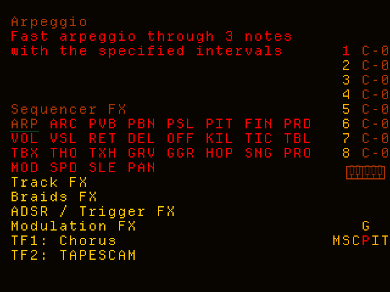
Browse commands by purpose, then choose one for the current step. The list combines shared tracker commands with commands supported by the row’s instrument. The help area explains the highlighted command.
On this screen
- Category
- Groups related commands, including sequencer, track, envelope, modulation, and instrument controls.
- Command
- The short code that appears in the FX column.
- Help text
- Explains the selected command and its value format.
| Control | What it does |
|---|---|
| Move to the previous or next command. | |
| Move by a row within the command grid and between groups. | |
| Accept the highlighted command and return to the pattern. | |
| Set the command’s value in the adjacent value cell. |
In depth
Open a topic for detailed controls, values and workflows.
Reading FX values
Track FX force sequencer or sound-engine values on individual steps. Other grooveboxes often call these "parameter locks". Each Phrase row has 3 FX slots.
Each FX has a 3-letter command and a hexadecimal value. The in-app help panel gives a short description of the selected command.
Scale automation
SCL XY changes the global playback scale and root without changing the notes stored in phrases. X selects a scale (0 Chromatic, 1 Major, 2 Minor, through C Custom); Y selects the root (0 C through B B). The command applies to phrase FX only, not tables. If several tracks issue SCL on the same tick, the lowest-numbered track wins.
SCL belongs to Quantizer mode. With Note Lock active the command is not offered in the FX list, and any SCL already written into phrases is ignored while the mode is on.
Chords
CRD XY turns the note on its own Phrase row into a chord. Y selects: 0 Major, 1 Minor, 2 Dim, 3 Aug, 4 Sus2, 5 Sus4, 6 Power, 7 Maj7, 8 Min7, 9 Dom7, A Min7b5, B Dim7, C Add9, D MinAdd9, E Maj9, or F Min9. X selects one of 16 voicings: 0-3 are a rising closed inversion cycle; 4-7 add drop-2; 8-B add drop-3; and C-F combine both drops. The cycle continues through an extra octave for triads and power chords, so every value is distinct; larger values become progressively wider and less conventional. For example, CRD 4Y is drop-2 root position and CRD DY is first inversion with both drops. At the bottom or top of the pitch table, voices are clamped to its range. The command is not persistent: write it on every chorded row. Each generated note is quantized independently when Scale is active, in both Quantizer and Note Lock modes. It is available to software engines only; AY instruments ignore it and remain monophonic.
Sequencer FX
| FX | Value | Detailed behaviour |
|---|---|---|
ARP |
XY |
Arpeggiates the base note, +X steps and +Y steps. 37 produces a minor-chord pattern. |
ARC |
XY |
X selects the arpeggio direction or range mode; Y is its speed in ticks. |
PVB |
XY |
Pitch vibrato: X is speed and Y is depth. In Linear mode, depth uses 10-cent steps. |
PBN |
signed XX |
Adds XX pitch units every phrase/table row; FF means -1. Use 00 to stop. |
PSL |
XX ticks |
Slides from the preceding pitch to the new note over XX ticks. |
PIT |
signed XX |
Accumulated relative offset in pitch-table steps. |
FIN |
signed XX |
Accumulated fine offset in cents with Linear pitch, period units otherwise. |
PRD |
signed XX |
Accumulated relative oscillator-period offset. |
VOL |
signed XX |
Accumulated relative volume offset (FF is -1, not full volume). |
VSL |
signed XX |
Adds XX to volume on every phrase/table row. Use 00 to stop. |
PAN |
00-FF |
Absolute instrument panorama: left, centre (80), right. |
TPN |
00-FF |
Absolute mixer-track panorama: left, centre (80), right. |
RET |
XY |
Retriggers every Y ticks; X applies a volume change. Y=0 stops retriggering. |
DEL |
XX ticks |
Delays note-on. A delay longer than the current groove step skips the note. |
OFF |
XX ticks |
Sends note-off after XX ticks and enters an ADSR release stage. |
KIL |
XX ticks |
Hard-kills the voice after XX ticks without running ADSR release. |
TIC |
XX ticks |
Sets table ticks per row. In a table it changes that FX column's speed. |
TBL |
00-FE, FF off |
Replaces and restarts the instrument table immediately; FF stops it. |
TBX |
00-FE, FF off |
Starts or replaces an auxiliary table immediately; FF stops it. |
THO |
row XX |
Jumps all instrument-table columns to row XX. |
TXH |
row XX |
Jumps all auxiliary-table columns to row XX; it is not used from inside a table. |
GRV |
groove XX |
Selects a groove for the current track. |
GGR |
groove XX |
Selects a groove for every track. |
HOP |
XY |
Jumps to row Y, X times; X=0 loops forever. Table HOP affects its own column. |
SNG |
signed XX |
Moves playback by XX song rows. |
PRO |
00-64 |
Evaluates an absolute trigger probability from 0% to 100%. |
MOD |
AB |
Triggers on pass A of a B-pass cycle. |
SPD |
signed XX |
Selects a persistent per-track clock ratio; see the speed table below. |
SLE |
00-FF ticks |
Sets persistent per-track glide time for continuous engine FX. 00 is immediate. The setting resets to 00 when playback stops. |
Audio FX sends
| FX | Value | Detailed behaviour |
|---|---|---|
RSN |
00-FF |
Sets this track's reverb send until the next note trigger. |
DSN |
00-FF |
Sets this track's delay send until the next note trigger. |
ADSR / Trigger FX
| FX | Value | Detailed behaviour |
|---|---|---|
EAT / EDC / ESU / ERL / ESH |
00-FF |
Override attack, decay, sustain, release or envelope shape. |
TDC / TCL |
00-FF |
Override Trigger-mode Decay or Color on Plaits and Plaits-Alt. |
Conditions
Inspired by Swedish "trig conditions", the tracker supports trigger probabilities and modulo conditions.
| FX | Value | Meaning |
|---|---|---|
PRO |
00-64 |
Absolute trigger probability from 0% to 100% |
MOD |
AB |
Trigger on iteration A of B; for example 12, 22, 14, 34 |
MOD counters are local to the track and phrase. Invalid combinations, such as A greater than B, do not trigger.
MOD34 triggers on the 3rd pass of every 4-pass cycle. MOD1F triggers on the 1st pass of every 16-pass cycle.
Playback speed
Like NerdSEQ, ChooChooTracker supports an independent playback speed for each track.
SPD reads its value as a signed byte. 00 is normal speed, positive values make the track faster, and negative values make it slower. The setting remains active until another SPD command changes it.
| Value | Speed |
|---|---|
00 |
x1 |
01 |
x2 |
02 |
x3 |
7F |
x128 |
FF |
/2 |
FE |
/3 |
80 |
/129 |
Older projects without signed SPD support keep their original 00-10 mapping, so they still play as saved.
Very high multipliers can exceed the resolution of the tracker tick scheduler and have not been hardware-tested.
Modulation FX
Phrase and table FX can change a modulation slot without editing the instrument:
| FX pattern | Meaning |
|---|---|
M1A, M2A, M3A, M4A |
Relative Amount offset for modulation slots 1-4 |
M11, M12, M13, M14 |
Relative P1-P4 offsets for modulation slot 1 |
M21, M22, M23, M24 |
Relative P1-P4 offsets for modulation slot 2 |
M31, M32, M33, M34 |
Relative P1-P4 offsets for modulation slot 3 |
M41, M42, M43, M44 |
Relative P1-P4 offsets for modulation slot 4 |
The value is interpreted as a signed 8-bit relative change (01 adds 1, FF subtracts 1). Repeated commands accumulate. Effective values are clamped to their valid range.
P5 is not exposed as a phrase or table FX. It is available as the M1–M4 Wavetable modulation destination, so one modulator can scan the AYWavetable index of another.
| Modulation type | P1 | P2 | P3 | P4 | P5 when Shape is Wavetable |
|---|---|---|---|---|---|
| ADSR | Attack | Decay | Sustain | Release | Unused |
| AHD | Attack | Hold | Decay | Unused | Unused |
| LFO | Shape | Trigger mode | Period | Unused | AY wavetable index |
| SLFO | Shape | Trigger mode | Ticks | Multiplier | AY wavetable index |
| FLFO | Shape | Trigger mode | Frequency (1 Hz to 20 kHz) |
Unused | AY wavetable index |
Braids FX
| FX | Value | Meaning |
|---|---|---|
BMD |
00-2E |
Braids model |
BTM |
00-FF |
Absolute normalised Timbre |
BCL |
00-FF |
Absolute normalised Color |
BCF |
00-FF |
Exponential cutoff, 20 Hz to 20 kHz |
BRS |
00-FF |
Exponential filter resonance |
aChChid FX
| FX | Value | Meaning |
|---|---|---|
ASL |
00-FF |
Slide to the note without retriggering. 00 is 60 ms; higher values extend the glide. |
ADC |
00-FF |
Decay override: 200 ms to 2 s. |
AAC |
00-FF |
Accent amount: none to maximum. |
ATM |
00-FF |
Braids Timbre override; active only in Braids wave mode. |
ACL |
00-FF |
Braids Color override; active only in Braids wave mode. |
ACF |
00-FF |
Exponential 303 filter cutoff, 20 Hz to 20 kHz. |
ARS |
00-FF |
303 filter resonance, none to maximum. |
AEM |
00-FF |
303 filter envelope modulation, none to maximum. |
Bogie FX
| FX | Value | Meaning |
|---|---|---|
DMD |
00-0B |
Selects the Bogie model until the next trigger. |
DDC, DTO, DSW, DNO, DFM, DDR |
00-FF |
Override Decay, Tone, Sweep, Noise, FM or Drive until the next trigger. All six macros are available on every model. |
DCF |
00-FF |
Filter cutoff, mapped logarithmically. |
DRS |
00-FF |
Filter resonance. |
Sintered FX
| FX | Value | Meaning |
|---|---|---|
SMD |
00-05 |
Selects the Sintered model until the next trigger. |
SDC, SMP, SMA, SMB, SMO, SMC |
00-FF |
Override Decay, Mod, the first two model macros, Motion or the final model macro until the next trigger. |
SCF, SRS |
00-FF |
Filter cutoff and resonance. |
MIDI Out FX
| FX | Value | Meaning |
|---|---|---|
MC1-MC4 |
00-FF |
Sends a MIDI CC, rescaled to 0-127. Which CC number each slot sends to is set per-instrument (MC1 number-MC4 number on the instrument screen), not by the FX itself - a slot with no number set is inert. |
Plaits FX
| FX | Value | Meaning |
|---|---|---|
PMD |
00-17 |
Plaits engine |
PHA |
00-FF |
Absolute normalised Harmonics |
PTM |
00-FF |
Absolute normalised Timbre |
PMO |
00-FF |
Absolute normalised Morph |
PAX |
00-FF |
Main/Aux blend: 00 Main, FF Aux |
PCF |
00-FF |
Exponential cutoff, 20 Hz to 20 kHz |
PRS |
00-FF |
Exponential filter resonance |
Sample FX
| FX | Value | Meaning |
|---|---|---|
SPL |
00-03 |
Playback mode: 00 Forward, 01 Reverse, 02 Loop, 03 Ping-Pong |
SLI |
00-FF |
Play the numbered slice (01 = first slice) regardless of the note; 00 keeps normal note mapping. Requires slice mode enabled on the instrument |
SPT |
signed XX |
Sample transposition in semitones |
SST |
00-FF |
Normalised playback start |
STA |
00-FF |
Alias of SST (normalised playback start) |
SEN |
00-FF |
Normalised playback end |
SVL |
00-FF |
Absolute sample volume |
SCF |
00-FF |
Exponential cutoff, 20 Hz to 20 kHz |
SRS |
00-FF |
Exponential filter resonance |
SSP |
00-FF |
Sample speed, mapped from 0% to 500% |
AY Classic-only FX
| FX | Value | Detailed behaviour |
|---|---|---|
EVB |
XY |
Envelope-period vibrato: X speed, Y depth. |
EBN |
signed XX |
Adds XX to envelope period every phrase/table row. |
ESL |
XX ticks |
Slides from the preceding envelope period to the new value. |
ENT |
note XX |
Sets envelope period from the pitch-table note shown by the UI. |
EPT |
signed XX |
Accumulated relative envelope-period offset. |
EPL |
byte XX |
Sets the low byte of the envelope period. |
EPH |
byte XX |
Sets the high byte of the envelope period. |
AY Plus FX
| FX | Value | Detailed behaviour |
|---|---|---|
TNN |
note XX |
Sets the tone oscillator to a pitch-table note, ignoring the row note. |
TNP / TNF |
signed XX |
Accumulated tone pitch-step / fine offset. |
TRT |
any | Retriggers tone oscillator phase where supported. |
ENN |
note XX |
Sets the envelope oscillator to a pitch-table note. |
ENP / ENF |
signed XX |
Accumulated envelope pitch-step / fine offset. |
SFT |
00-07 |
Software type: None, Pulse, Sync Tone, Sync Env, Wavetable, Tone FM, Env FM, Sample. |
SFN |
note XX |
Sets the software oscillator to a pitch-table note. |
SFP / SFF |
signed XX |
Accumulated software oscillator pitch-step / fine offset. |
SRT |
any | Resets software oscillator phase. |
SFM |
signed XX |
Accumulated FM-depth offset. |
PWM |
signed XX |
Accumulated pulse-width offset. |
SPL |
signed XX |
Accumulated pulse low-level offset. |
SWT |
signed XX |
Accumulated wavetable-index offset. |
AY Sample FX
AY Sample accepts the shared AY commands plus TNN, TNP, TNF, TRT, SFN, SFP and SFF as described above.
| FX | Value | Detailed behaviour |
|---|---|---|
SMS |
00-FF |
Sets legacy AY Sample playback start to XX x 64 source samples. |
Engine parameter FX apply to their matching instrument type and are reset at the next note trigger unless stated otherwise. SPD is intentionally persistent.
The FX selector filters this reference to common commands plus the group supported by the active instrument. The contextual help panel provides value details while editing.
Groove
Phrase → SELECT + UP

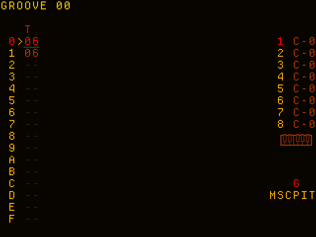
A groove sets how many ticks each phrase step lasts. Equal values produce straight timing; alternating longer and shorter values create swing. The sequence repeats as the track plays.
On this screen
- Groove number
- The timing pattern being edited.
- T — Timing
- Ticks per step. The example uses 06, 06 for an even pulse.
| Control | What it does |
|---|---|
| Choose a groove step. | |
| Adjust the tick count. | |
| Choose the previous or next groove. | |
| Return to Phrase. | |
| Hold SELECT, then press OPT to enter selection mode. Release both; use directions to extend the range. Repeat SELECT + OPT to cycle selection ranges. | |
| Tap and release OPT to copy selected cells and leave selection mode. | |
| Cut selected cells and leave selection mode. | |
| Hold SELECT, then press EDIT to paste copied cells at the cursor. |
Use GRV in a phrase to select a track groove, or GGR to change the global groove.
Cloning.
Make a new version of the part you want to change. Select it, clone it, then edit the new copy. Choo Choo gives the copy a new number.
A chain arranges phrases. A phrase holds notes. An instrument makes the sound.
What do you want to change?
IN SONG
Same phrases. A different sequence.
- Select the chain cell you want to vary: hold SELECT, press OPT, then release both.
- Hold SELECT and press EDIT once. Release both. The cell now has a new chain number.
- Open that chain with SELECT + RIGHT. Change its phrase order or transpositions.
What you get
A new chain that still uses the same phrases.
Changing the notes inside those phrases still changes every use of them. Choose The notes to make the notes independent too.
What does “shallow clone” mean?
This is a shallow clone: the chain is new, but the phrases it points to are shared. A deep clone also creates new phrases. Find that option under The notes.
IN CHAIN
A new melody or rhythm.
- Select the phrase cell you want to vary: hold SELECT, press OPT, then release both.
- Hold SELECT and press EDIT once. Release both. The cell now has a new phrase number.
- Open that phrase with SELECT + RIGHT. Edit its notes and FX.
What you get
Independent notes and FX, using the same sounds.
Instrument settings are still shared. If the chain itself is reused elsewhere, clone the chain in Song first.
Want different notes across a whole chain? Use a deep clone.
Start in Song and select the chain cell. Then:
- Hold SELECT and press EDIT once to clone the chain.
- Release EDIT only. Keep SELECT held.
- Press EDIT again to clone the phrases inside the new chain. Release both.
You now have a new chain and new phrases. The instruments are still shared.
See the deep-clone example in Song →IN PHRASE
The same notes with a different sound.
- Move to the I column. Hold SELECT, press OPT, then release both. Use UP / DOWN to select only the instrument cells you want to change.
- Hold SELECT and press EDIT once. Release both. The selected instrument numbers change to new slots.
- Open a new instrument with SELECT + RIGHT. Change its sound settings.
What you get
A new instrument and a copy of its default table.
Each distinct instrument in the selection is cloned once. If the phrase is reused elsewhere, clone the phrase in Chain first.
Want to choose the destination instrument slot yourself?
In Instrument or Instrument Pool, use SELECT + OPT to copy the sound. Move to an empty slot and use SELECT + EDIT to paste it.
This also copies the default table. Set the new instrument number in Phrase yourself; this method does not update the notes’ instrument references.
See the Instrument Pool examples →Why not just copy and paste?
Copying a Song or Chain cell repeats its existing number. Both places still use the same chain or phrase. Cloning gives you a new number and a separate copy at the level you chose.
To keep both versions in the arrangement, copy/paste the original cells first, then clone the cells for your variation.
Cloning needs free slots. Referenced sample files and other external resources are not duplicated. The numbers above are examples; Choo Choo chooses available slots.
Instrument
Phrase → SELECT + RIGHT

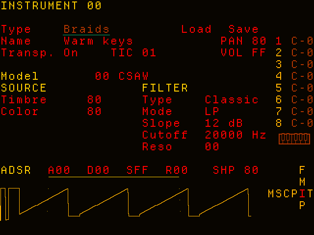
Choose a sound engine and shape its voice. The top of the page contains shared instrument settings; the rest changes with the selected engine. This example uses Braids.
On this screen
- Type / Name
- Choose the engine and give the instrument a useful name.
- Load / Save
- Load an instrument preset or save the current sound.
- Transp. / TIC
- Allow note transposition and set the default table speed in ticks.
- PAN / VOL
- Instrument pan and volume. Track mixing is applied separately.
- Model / Timbre / Color
- Braids’ synthesis model and its two sound-shaping parameters.
- Filter / ADSR
- Filter type, mode, slope, cutoff and resonance; envelope attack, decay, sustain, release and shape.
| Control | What it does |
|---|---|
| Open a chooser or activate the selected command. | |
| Adjust the selected parameter. | |
| Browse instruments. | |
| EDIT + PLAY | Preview the instrument. |
| Open Modulation / Instrument Pool. | |
| Open Table / return to Phrase. | |
| Copy the instrument and its default table. | |
| Paste into the chosen instrument slot, replacing its contents. | |
| Bogie changes model and exposes its active drum macros. | |
| MME changes the interaction between its two oscillators. | |
| The digital drum model changes with its model-specific controls. | |
| The native FM algorithm changes in the operator editor. | |
| The cursor moves through the native SID voice settings. | |
| An explicit tuning override replaces the Bank value. |
Engine controls vary. Start with one sound, then use Modulation and Table to add movement.
In depth
Open a topic for detailed controls, values and workflows.
Sideloaded presets
Put sideloaded presets in instruments/USER/<engine>/ — for example, USER/dx7/, USER/sid/ or USER/soundfont/ inside the instruments folder. Keep collection subfolders; supported ZIP packs can stay zipped. Included collections live separately in instruments/FACTORY/.
Web — import a whole USER collection: ZIP your USER folder, keeping archive paths such as USER/dx7/... or instruments/USER/dx7/.... Start the tracker, click Import USER ZIP, and select the ZIP. Supported engine folders and their subfolders are imported together; existing files are kept. Import bank folder is specifically for SoundFont banks, rather than a whole USER collection. Browser storage limits apply; keep the original ZIP as a backup.
- Choose the matching Type on the Instrument screen.
- For native chip engines, choose Bank → USER, then open Preset to browse your folders, banks or ZIP packs. Press EDIT to load a sound; EDIT + PLAY auditions it where supported.
- Save the project to keep the chosen instrument.
SoundFont uses Rescan, then Preset, to find and choose sounds. Keep its external sample files and relative folder paths intact.
For engine folders, supported formats and import details, see Portable factory collections and USER presets.
SoundFont

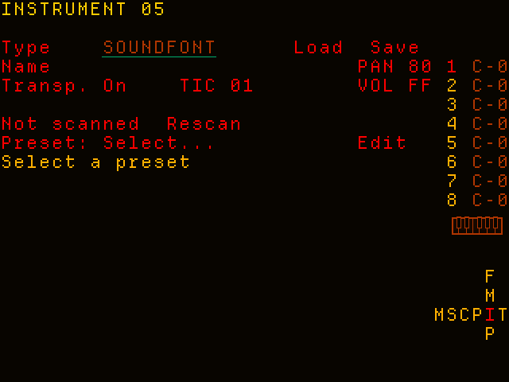

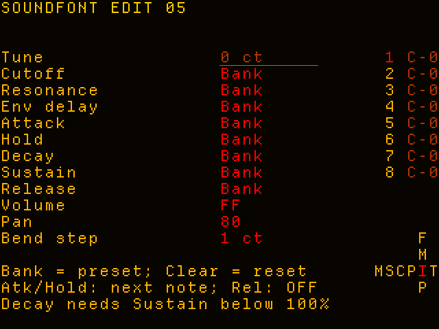
Copy original SF2/SF3 banks, SFZ/EXS instruments with their samples, or ZIP archives
into instruments/USER/soundfont. Select SOUNDFONT on Instrument. The scan
row shows Not scanned, Scanning..., or Scanned, with a Rescan action.
Scanning reads metadata; it does not load every preset's samples into memory.
The Preset row shows the active preset. Tap and release EDIT to open the browser at that preset: collections appear on the left and their presets on the right. Each collection presents a flat list, including presets inside bank files and ZIP archives. Supporting WAV/AIFF files stay with their mapped instruments; collections containing only individual samples list those samples as presets. Download IDs and archive hashes are removed from display labels; musical note, BPM and take numbers are retained. EDIT selects a preset; EDIT+PLAY previews the loaded selection.
Hold EDIT and press Left/Right on Preset to move sequentially in the same order as the browser, continuing into the next collection and wrapping at either end of the library. Rapid cycling prepares the latest requested selection. The current preset stays playable while a replacement prepares. If loading fails, the requested preset remains selected and the instrument becomes silent. Error: and the reason appear at the bottom of Instrument; cycling continues from that preset in either direction. Rescan after importing or changing library files. Preset status appears directly below Preset with a fixed color. Loading does not post messages on SONG or other pages.
Native keys shows the selected preset's authored note-on range, using C4 for MIDI note 60. (gaps) means some notes inside those bounds have no mapped zone. It is the union across velocity layers; not every velocity or articulation must sound at every displayed key. Release-only samples do not extend the range. Tuning and pitch FX do not change this display or extend the authored mapping.
Edit, to the right of Preset, opens the experimental SoundFont editor: tune (−2400 to +2400 cents), cutoff (20–20000 Hz), resonance (0–40 dB), envelope delay/attack/hold/decay/release (0–20000 ms), sustain (0–100%), volume, pan, and Bend step (1–100 cents per PBN unit). New instruments use a 1-cent bend step. Older files show Stock, retaining their previous PBN scale (25 cents in linear pitch mode, 1 in period mode); set Bend step to 1 for finer bends. Clear restores a 1-cent bend step. This affects SoundFont PBN only; FPT remains fixed tuning. Volume and pan are the same instrument values shown on the home page. Tone and envelope fields default to Bank, retaining each layer's authored value. An explicit value overrides that parameter across the preset's layers. Clear restores Bank, zero cents for Tune, full volume, or centered pan. EDIT+Left/Right makes fine changes; EDIT+Up/Down makes larger changes. OPT returns to Instrument; EDIT+PLAY auditions the instrument at its song note or the default. This edits instrument playback controls, not the bank's per-sample mappings, key/velocity zones or loop points.
Tuning, cutoff and resonance apply live. Attack, delay and hold are set at note-on. Decay, sustain and release can update a playing voice; release begins with a note OFF, not just on an empty row. Decay is inaudible at 100% sustain. A release time cannot extend a sample past its available audio. An explicit release override also makes a one-shot sample respond to note OFF. With Bank settings, its authored one-shot behavior remains. The preset's key and velocity ranges remain authoritative; notes outside them are silent. FPT can pitch an already selected sample beyond that range without changing its mapping. Edits save in instrument and project files without modifying the source bank; older songs without overrides retain their original bank settings.
SoundFont retriggers and KILL use a short 3 ms smoothing transition to reduce clicks when a sample is interrupted away from zero. KILL still cuts the note; it does not play the preset's release envelope. This does not repair clicks already recorded in a sample or mismatched authored loop points.
A WAV with an unknown sampler-specific loop type can play its audio without that loop. The Instrument warning names the ignored loop type; the source file is unchanged. A forward WAV loop ending exactly one sample beyond the audio is accepted as an exclusive end at the sample boundary, with a warning; the PCM and explicit SFZ/EXS loop mappings are unchanged. Other invalid loop bounds and root notes report specific errors. A single zero RIFF alignment byte mistakenly counted in an odd-sized PCM frame layout is ignored with a warning; other partial PCM frames remain errors. Standard alternating/backward WAV loops are still unsupported.
SoundFont FX exposes eight controls in the contextual Lane FX picker. All values below use tracker hexadecimal notation. The FX affect their track only and leave the instrument's saved controls unchanged. Each new note starts from the instrument settings, then applies commands on its row and subsequent rows.
| FX | Control | Values |
|---|---|---|
| FPT | Pitch | 00 = −24 semitones, 18 = zero, 30 = +24; exact semitone steps |
| FCF | Cutoff | 00–FE: 20 Hz–20 kHz, logarithmic |
| FRS | Resonance | 00–FE: 0–40 dB |
| FAT | Attack | 00–FE: 0–20 seconds, finer spacing at short times |
| FHD | Hold | 00–FE: 0–20 seconds before decay, set on the note row |
| FSU | Sustain | 00–FE: 0–100% held level |
| FDC | Decay | 00–FE: 0–20 seconds, finer spacing at short times |
| FRL | Release | 00–FE: 0–20 seconds, finer spacing at short times |
For FCF/FRS/FAT/FHD/FDC/FSU/FRL, FF returns to the Edit setting (including Bank).
Put Attack/Hold on the note row. Decay/Sustain/Release can change the active
note; use OFF to hear its release. Volume and pan use the common controls;
legacy FVL/FPN commands still load and play but are no longer offered. Pitch FX
change tuning without changing the bank's selected key zone. Existing sequencer
pitch/fine-pitch commands, MODs and track effects remain available. Projects save
stable bank/preset references and FX commands; sample libraries remain external.
All banks are USER banks. Large instruments may exceed the default 64 MiB PCM cache, and unsupported source parameters produce warnings. See the SoundBanks guide for platform paths, browser import, cache configuration, format coverage and current validation limits.
SoundFont compatibility: banks, presets and modulation
One SF2 or SF3 bank file can contain many presets, together with their samples. A library collection is the folder used to group those files in the browser. These are different levels: a preset can have unsupported behavior even when other presets in the same file translate well.
Preset modulation means programmed links from inputs such as velocity, key, mod wheel or pressure to a sound parameter. Those links can belong to a preset or to an underlying instrument layer shared by several presets. They are not necessarily a setting that affects every sound in the bank.
| Preset feature | Current translation |
|---|---|
| Sample/key/velocity mapping, root pitch and tuning | Implemented; authored ranges are retained. Velocity zones and ordinary tracker velocity still work. |
| Sample offsets, supported loops, gain/pan and exclusive groups | Implemented within the parser and voice limits. |
| Static low-pass cutoff/resonance and volume envelope | Implemented through the tracker renderer; not a guarantee of identical response to another SoundFont player. |
Custom preset/instrument modulation routes (pmod / imod) |
Not implemented. Authored controller-to-parameter mappings, amounts and response curves are ignored. |
| SoundFont modulation/vibrato LFOs and modulation envelope routing | Not implemented; programmed movement of pitch, filter or volume may be missing. |
| Key-scaled volume-envelope hold/decay, fixed-key/fixed-velocity generators | Not implemented. |
| SoundFont chorus/reverb sends | Not implemented. Tracker effects can be set manually but do not reproduce the preset's settings automatically. |
The older message “Custom bank modulation ignored” describes a file-level check: the parser found custom modulation records somewhere in the bank. It does not establish that the selected preset uses them, or that the whole bank is unusable. This general limitation is documented here instead of repeating that message under every preset. Detailed parser diagnostics retain the records; other load errors and compatibility warnings still appear when applicable. The engine does not claim complete SoundFont default-modulator behavior either. Tracker PBN, vibrato, Edit and Lane FX are independent controls, not automatic translations of omitted preset programming.
For choosing a library, start with presets based mainly on sample mappings, loops and static envelopes. Sounds whose character depends on controller articulations, animated filters or programmed LFOs need closer comparison in a full SoundFont player. Loads and plays does not mean fully reproduces the preset. Compare useful notes and velocities as well as held notes and note OFF. Changing SF2 to SF3 (or back) does not by itself remove these modulation needs. A conversion must translate the mappings and behavior into features this engine supports; rendering an effect into a sample preserves only that rendered result, not its interactive controller response. See the format coverage and limits and validation notes before choosing or converting a bank. These limits describe the current experimental implementation, not restrictions inherent to all SoundFont players.
AY Classic, AY Plus and AY Sample


These are the original ChipNomad AY/YM engines. AY Classic exposes hardware-style tone, noise and envelope controls. AY Plus adds software oscillators and richer modulation. AY Sample reproduces a sample through AY-style volume levels and is distinct from the Sampler engine.
AY Classic
This is a legacy instrument type from ChipNomad v1.0.0. The newer AY Plus instrument offers more features.
AY Classic instruments have these parameters:
- Mixer: tone on or off, noise on or off, envelope shape (
0-F) - Volume: software-generated ADSR envelope
- Automatic envelope period: on or off, with a rate from
1:1toF:F
AY Quality in Settings affects only AY/YM rendering. It does not change Braids, Plaits or Sampler quality. Sample dithering applies to AY Sample quantisation.
See the ChipNomad AY-3-8910 documentation for chip details.
AY Plus
AY Plus applies classic synthesiser concepts to AY-3-8910/YM2149F sound design. You can think of AY as a synthesiser with 5 oscillators:
- 3 square wave tone oscillators
- 1 noise oscillator
- 1 amplitude envelope generator which can be used as an oscillator
Under this model, each instrument has 3 hardware oscillators: tone, noise and envelope. AY Plus adds a 4th, software oscillator. Updating AY registers faster than the project tick rate opens up more sound design options. Because of the way AY works, the oscillators are mixed using ring modulation. Try different pitch offsets, detuning and oscillator combinations to see what falls out.
Each tonal oscillator can be tuned independently with pitch and fine tune offsets.
Software oscillator types and their parameters:
- Pulse - square wave with controllable pulse width
- FM Depth - simple FM depth
- Pulse width - the full range is
00-FF, while the number of steps is set on the Project screen - Pulse low - controls the low value in a repeating pair whose high value is always
15
- Sync Tone - hard-sync effect for the tone oscillator
- FM Depth - simple FM depth
- Sync Env - hard-sync effect for the envelope oscillator
- FM Depth - simple FM depth
- Pulse width - duration ratio between the 2 shapes in the envelope pair
- Envelope Pair - 2 envelope shapes to switch between
- Wavetable - 32-step wavetables, edited on the Wavetable screen
- FM Depth - simple FM depth
- Wavetable index
- Tone FM - simple FM-like effect for the tone oscillator
- FM Depth - tone FM depth
- Env FM - simple FM-like effect for the envelope oscillator
- FM Depth - envelope FM depth
Pulse and Wavetable software oscillators cannot be used with the Envelope oscillator. The Envelope oscillator switches off automatically.
Simple FM switches quickly between 2 period values, 1 lower and 1 higher. This is similar to using a square wave as an FM modulator. Pulse, Sync Tone, Sync Env and Wavetable use a 1:1 ratio between the FM carrier and modulator. Tone FM and Env FM can imitate other ratios through software oscillator pitch offsets.
AY Sample
You can load mono or stereo WAV files at 8-bit, 16-bit, 24-bit or 32-bit. They are converted to 8-bit and truncated to 16 KB. This limit matches the RAM page size of the ZX Spectrum.
AY plays samples through fast writes to the volume register. Its output is unipolar, so samples need to be "lifted to zero" for cleaner playback. This removes end-of-sample clicks and improves quiet tails.
AY has 4-bit DAC resolution with a non-linear volume scale, so 8-bit samples are converted to 4-bit during playback. The Sample dithering option in Settings can improve the perceived bit depth. Dithering is not practical on retro platforms such as the ZX Spectrum and Atari ST, so leave it off when writing for real hardware or chasing a crunchy lo-fi sound.
Samples behave like another AY Plus software oscillator, but their extra parameters make them easier to handle as a separate instrument type.
Sample parameters:
- Sample rate - playing a sample at its native rate produces a
C-4 - Sample start
- Sample length
- Sample loop start
- Sample pitch offset
- Sample fine pitch offset
The Tone and Noise oscillator sections match those of AY Plus. Because of the way AY works, all oscillators are mixed using ring modulation.
Braids

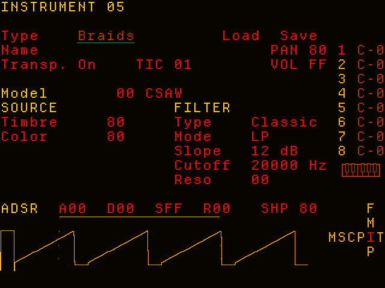
Braids provides 47 synthesis models. Its main controls are:
- Model: oscillator or synthesis algorithm
- Timbre and Color: model-dependent macro parameters
- Filter: additional LP/BP/HP filter,
12or24 dBslope, cutoff and resonance - ADSR: attack, decay, sustain and release
Tap Model to choose from categorised model lists.
| Category | Models |
|---|---|
| Analog | 00 CSAW, 01 MORPH, 02 SAW-SQUARE, 03 SINE-TRI, 04 BUZZ, 05 SQUARE-SUB, 06 SAW-SUB, 07 SQUARE-SYNC, 08 SAW-SYNC |
| Multi Osc | 09 TRIPLE-SAW, 10 TRIPLE-SQR, 11 TRIPLE-TRI, 12 TRIPLE-SINE, 13 TRIPLE-RING, 14 SAW-SWARM, 15 SAW-COMB, 16 TOY |
| Filter / Voice | 17 FILTER-LP, 18 FILTER-PEAK, 19 FILTER-BP, 20 FILTER-HP, 21 VOSIM, 22 VOWEL, 23 VOWEL-FOF, 24 HARMONICS |
| FM / Chaos | 25 FM, 26 FEEDBACK-FM, 27 CHAOTIC-FM |
| Physical | 28 PLUCKED, 29 BOWED, 30 BLOWN, 31 FLUTED, 32 STRUCK-BELL, 33 STRUCK-DRUM |
| Drums | 34 KICK, 35 CYMBAL, 36 SNARE |
| Wavetables | 37 WAVETABLES, 38 WAVE-MAP, 39 WAVE-LINE, 40 WAVE-PARA |
| Noise / Granular | 41 FILTER-NOISE, 42 TWIN-PEAKS, 43 CLOCK-NOISE, 44 GRAN-CLOUD, 45 PARTICLE, 46 DIGI-MOD |
Parameters
Timbre and Color depend on the selected model. Refer to the original Braids manual from Mutable Instruments for the full model list and details, or just play by ear.
VCF and VCA
Braids feeds the standard ChooChooTracker multimode filter and ADSR envelope.
Settings
Global Braids settings are available in the app settings:
- BITS: reduces output resolution
- DRFT: adds oscillator pitch instability
- SIGN: reproduces the original Braids waveform-imperfection algorithm
aChChid

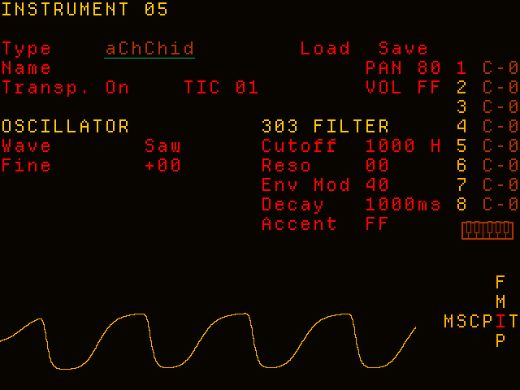
aChChid is a monophonic acid bass engine based on Open303. Square and Saw use its native TB-303 oscillator, filter, envelope and accent behaviour. Braids replaces only the oscillator, then continues through the same 303 filter and amplifier path. It exposes Model, Timbre, Color and Shaper instead of Fine tune. Shaper progresses from soft saturation into wavefolding. aChChid does not use ChooChooTracker's unified post-filter or ADSR.
Cutoff and Decay use logarithmic editing: EDIT + LEFT/RIGHT moves by one musical control step, while EDIT + UP/DOWN moves by sixteen steps. Cutoff covers 200 Hz to 20 kHz; Decay covers 200 ms to 2 s.
An F in the note volume column triggers an accent. Normal notes use a half-step gate (3 ticks in the default 6-tick groove). ASL slides to that note from the previous pitch without retriggering the 303 envelope; it automatically holds the preceding gate, and ASL 00 gives a 60 ms glide. ATY keeps its note open for the whole current step. Notes without ASL always retrigger. Modulation destinations include Decay and Accent, plus Timbre and Color in Braids wave mode.
Bogie

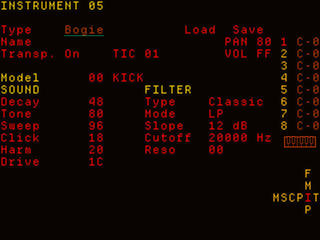
Bogie is a native one-shot drum synthesiser. Tracker notes set pitch and the tracker/instrument volume sets level; each trigger has its own internal decay, so it has no ADSR page. It has 12 models: Kick, Snare, Hat, Clap, Tom, Rim, FM, Noise, Cowbell, Cymbal, Shaker and Clave.
Its six macros are Decay, Tone, Sweep, Noise, FM and Drive. Their labels adapt where useful (for example, Kick's Noise is Click, and Cowbell's FM is metallic cross-modulation). Every macro is active on every model, but its musical role changes with the model: Sweep can alter pitch, burst spacing or metallic spread; FM can add cross-modulation, a metallic layer or a ring-like overtone. The lower half of each range is intended for conventional drum sounds; the upper half deliberately opens wider timbral morphs and more synthetic results.
Every model can use the shared LP/BP/HP multimode filter, with Clean, Classic, Aggro or Acid character, 12/24 dB slope, cutoff and resonance. Bogie supports all of its active macros plus Volume, Pitch, Cutoff and Resonance as modulation and motion-recording destinations. Use short Decay with Cowbell for sharp phonk attacks; increase FM for a harder, more metallic bell.
On the Modulation screen, press EDIT on a source to choose a family (Envelopes, LFO or Sticks), then its source. Left and Right still cycle sources directly.
Sintered

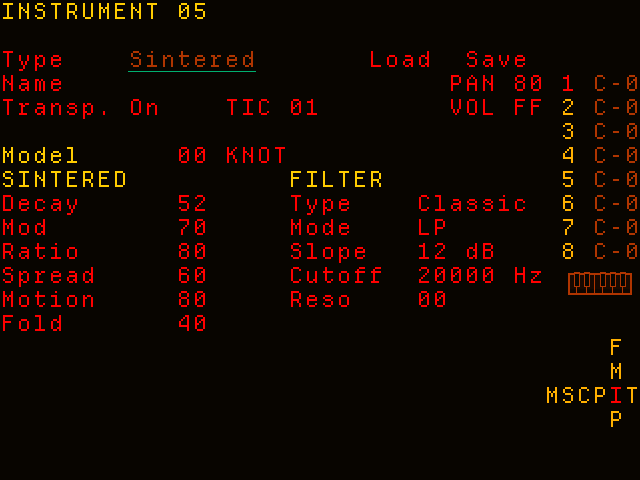
Sintered is a native one-shot digital percussion synth. Notes set its fundamental pitch; its six models are Knot, Shard, Burst, Comb, Logic and Melt. Every model has Decay, Mod and Motion, plus three model-specific controls: Knot uses Ratio/Spread/Fold, Shard Ratio/Feedback/Bite, Burst Noise/Color/Feedback, Comb Time/Damping/Regen, Logic Rate/Pattern/Crush and Melt Ratio/Chaos/Drive. Mod is always the internal coupling depth.
Motion is an internal macro envelope, not pitch glide: values below 80 use an AD shape, 80 disables it, and values above 80 use a decay-only shape. Moving farther from the centre makes the envelope faster. Its destinations are fixed per model, so Sintered stays predictable in tracker patterns: Knot animates Mod/Fold; Shard Feedback/Bite; Burst Noise/Color/Feedback; Comb Damping/Regen; Logic Rate/Crush; Melt Chaos/Drive. All models reset their state on a note trigger and bound internal feedback for repeatable hits.
MME

MME (Multi Modulation Engine) is a two-oscillator synth dedicated to interactions between oscillators. Its models are Ring, Fold, Cross, VPM, Sync, Logic and Vocode. Both oscillators are internal and follow tracker notes; Interval sets their relationship.
The six macros are Waves, Interval, Amount, Flow, Feedback and Shaper. Waves selects musical A/B waveform pairs. Amount controls the model's core interaction, Flow changes its direction or algorithm variant, and Feedback is bounded but becomes deliberately wild at the end of its range. Shaper is a shared final stage which moves from clean through saturation to wavefolding.
MME uses the shared LP/BP/HP multimode filter and ADSR. All six macros, Cutoff and Resonance are available to modulation and motion recording. Hold EDIT on Model to open the model popup.
MIDI Out

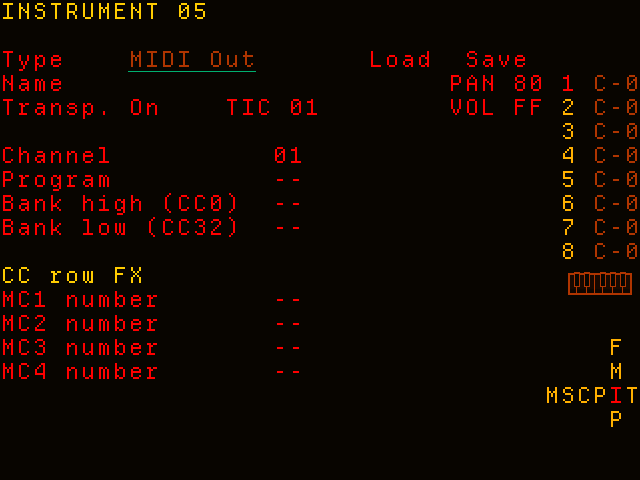
MIDI Out (desktop, PortMaster and Web MIDI browsers) drives an external MIDI device instead of synthesizing audio: triggering a note sends a real MIDI Note On on the instrument's Channel (1-16) and, when the note ends, the matching Note Off. Volume becomes velocity, and a chord track's voices each get their own Note On/Off. There is no audio to hear from ChooChooTracker itself - select the output device under Settings first. See MIDI for the full picture, including sound preview from a MIDI keyboard.
Program and Bank high/low (CC0/CC32) are optional - shown as -- when off, Clear toggles a field off and remembers its value. When set, they are sent once, right before the next note, whenever they differ from what that channel was last told (not before every note, which would retrigger the receiving device's own envelopes/patch).
MC1 number-MC4 number pick which CC number (00-7F) each of the four MC1-MC4 row FX sends to - see MIDI Out FX. Also --/optional; a slot left unset makes its FX inert.
Plaits and Plaits-Alt

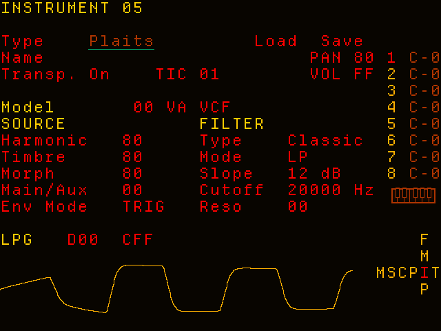

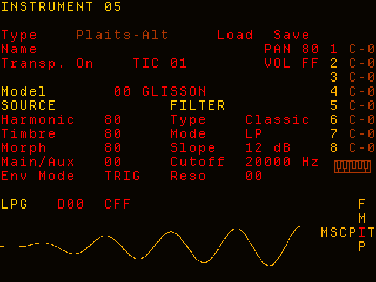
Plaits provides 24 engines, grouped in the selection popup as follows:
| Category | Engines |
|---|---|
| Analog / Waves | 00 VA VCF, 01 PHASE DIST, 05 WAVE TERRAIN, 06 STRING MACH, 08 VIRTUAL ANALOG, 09 WAVESHAPING, 11 FORMANT, 12 HARMONIC, 13 WAVETABLE, 14 CHORD |
| FM | 02 6-OP FM 1, 03 6-OP FM 2, 04 6-OP FM 3, 10 2-OP FM |
| Digital | 07 CHIPTUNE, 15 SPEECH |
| Texture / Noise | 16 SWARM, 17 NOISE, 18 PARTICLE |
| Physical | 19 STRING, 20 MODAL |
| Drums | 21 BASS DRUM, 22 SNARE DRUM, 23 HI-HAT |
Plaits-Alt is a collection of alternative models for the original Plaits module. Most are stranger or more experimental than the average VCO.
| Category | Engines |
|---|---|
| Granular / Micro | GLISSON, PULSAR, GENDY, SCANNED, LOOPBACK |
| Phase / Harmonic | PHASE WEAVE, SIDEBAND BANK, UNDERTOW, ATTRACTOR, LOCKSTEP |
| Acoustic / Physical | REED PIPE, BRASS, SHAKERS, CLAPS, FRESHETS FORMANT |
| Polyphony / Harmony | DIATONIC CHORD, SCALE STACK, WT DIATONIC CHORD, WT SCALE STACK, HELIX |
| Digital / Weird | BYTEBEAT, RULEFIELD, SPECTRAL SPIRAL, PHASE FLOCK |
The parameters follow Mutable's design:
- Harmonic controls harmonic relationships, balance or model choice inside an engine.
- Timbre generally moves from dark/sparse to bright/dense spectra.
- Morph explores another timbral dimension.
- Main/Aux blends the main output with the engine's alternate output.
Their precise meaning depends on the engine. For example, chord engines use them for chord type, inversion and waveform. Physical models use them for material, excitation and decay, while drum engines use them for tone, character and decay. Refer to the Plaits user manual for details.
For CHORD, DIATONIC CHORD and WT DIATONIC CHORD, Harmonic displays the selected chord name (MIN, MAJ, MIN7, MAJ7, and so on) rather than its raw control value. Braids WAVE PARA similarly names its Color voicings.
Tap Engine to choose from categorised engine lists.
Env Mode has 2 routings:
TRIGreproduces the module with TRIG connected and LEVEL unpatchedVCAholds LEVEL open and applies the tracker ADSR after the voice
2xSCWF

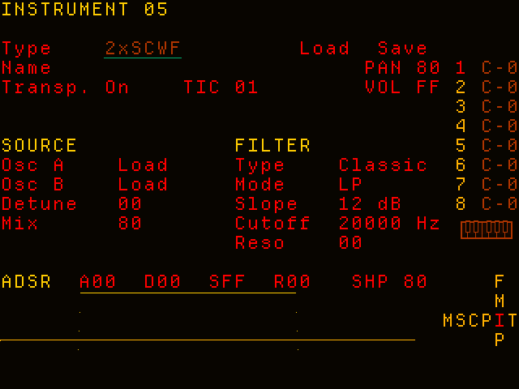
2xSCWF is a dual single-cycle waveform oscillator. Load 1 mono WAV containing exactly 1 period into each oscillator. Both oscillators read forwards and wrap at the end of their cycle.
Mix crossfades A and B.
Detune is fine and exponential from unison through +200 ct, then moves in semitone steps from +3 st to +24 st.
2xSCWF treats each file as a 1-cycle table and reads it exactly once per oscillator cycle. This lets you blend and detune 2 single-cycle waves.
The factory waveforms/AKWF/ folder contains waveforms from the Adventure Kid library. Plenty more are available online if you want to expand the collection.
BYOWTBL

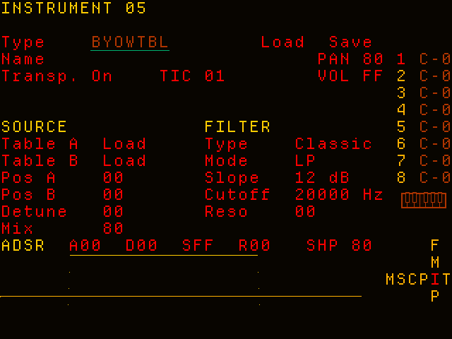
BYOWTBL is a dual wavetable oscillator compatible with Serum tables. Each oscillator loads a mono WAV containing consecutive single-cycle frames. Pos A and Pos B scan their tables independently from 00 to FF. The engine interpolates linearly within each frame and between adjacent frames. Mix crossfades the oscillators, and Detune offsets oscillator B.
Native OPLL and VRC7 instruments
Included in the pinned upstream build. The upstream reference describes these native engines as development features; platform limits still apply.

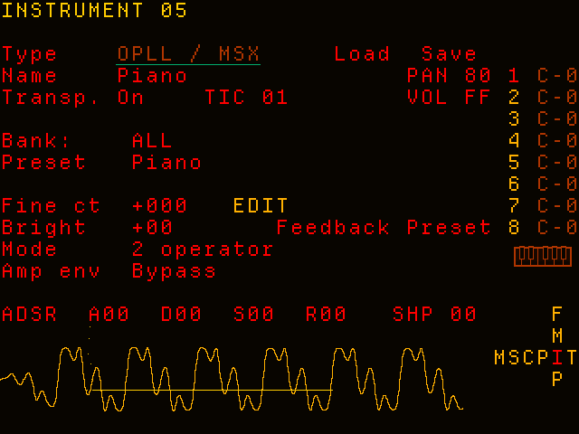

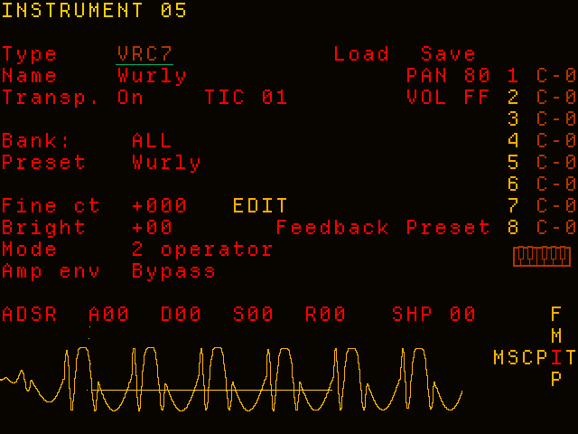
The Instrument Type selector has an FM group with OPLL / MSX (YM2413) and VRC7 (DS1001). Each now offers 73 programs in scrolling Bank / Preset lists: the original 15 tones, 40 additional distinct tones from emu2413's YM2413/VRC7/YMF281B tables, and 18 ChooChoo-authored two-operator programs. Exact duplicate tone bytes are omitted within each engine. The additional palettes use the chip's programmable tone slot; they do not expand the physical ROM. Program zero identifies a custom tone. EDIT + left/right selects the previous or next preset within the bank filter. Fine ct adjusts tuning from -100 to +100 cents.
In the program list, EDIT + PLAY auditions the highlighted sound; release the buttons to stop. EDIT commits and OPT cancels. Browsing/audition does not change the instrument, table or song. The normal Instrument-page audition gesture continues to work after selection. Native chip envelopes supply attack/release; the optional Amp env adds a software ADSR (see Native chip controls below). Use EDIT beside Fine ct for the native operator editor; see the FM operator editor reference below.
New instruments store all eight native tone bytes, bank/name, program and fine tuning in the song/instrument file. Files containing these types use format 7.0 and need this build or later. Earlier formats remain readable; songs without these types continue to save as 5.0. Rhythm programs are deferred. The expanded library is validated on the host; human listening and a new handheld check remain pending.
AdLib / OPL2 and OPL3
Included in the pinned upstream build. The upstream reference describes these native engines as development features; platform limits still apply.

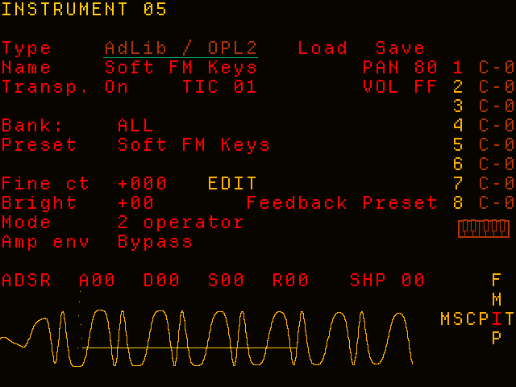

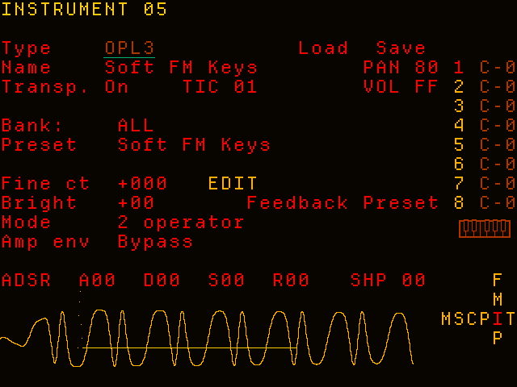
FM also includes AdLib / OPL2 (YM3812) and OPL3 (YMF262). Bank filters the factory list; Preset opens category groups and an All view. EDIT + PLAY auditions before selection, EDIT selects, OPT cancels, and EDIT + left/right on Preset loads the previous/next matching entry. Fine ct adjusts local tuning. Mode shows 2 operator, 4 operator, or Dual voice. OPL2 hides incompatible OPL3 patches; OPL3 can play the shared two-operator collection.
Bank and preset popup titles identify the current engine. Switching engine or instrument slot resets the bank filter to All banks, including switching between the compatible AdLib and OPL3 engines. Returning from a popup within the same slot keeps the chosen filter. Cancelling a DX7 bank import restores the previous filter.
Preset confirmation also publishes edits made on button release to the next UI/audio tick. Playing songs no longer need another button press or a transport restart to receive that patch. Output still follows the configured audio buffer and the engine's envelope/retrigger behavior.
The factory collection contains 697 source entries from The Fat Man 2-op, The Fat Man 4-op and DMXOPL3, with 589 normalized unique patch identities. Aliases retain source names and attribution. Source-native operator levels, LFO-depth flags, note offsets, fixed percussion pitches and dual-voice tuning are retained. Tracker volume uses software amplitude; it does not reproduce the original MIDI players' volume curves or velocity-offset policies. Source release-duration estimates do not cut off sustained notes. Some effects have slow attacks: hold Seashore rather than expecting a short click to reveal it.
Factory assets live in instruments/chips alongside the existing instrument
library, with notices under licenses/chip-banks. Preset selection leaves the
slot's table and track-owned inserts unchanged. Newly saved files use 7.0 and
embed the complete tone. Factory audio is machine-tested on host and ARM64; human audition
remains pending.
Sega PSG and Game Boy native instruments
Included in the pinned upstream build. The upstream reference describes these native engines as development features; platform limits still apply.


CHIP now includes Sega PSG, GB Pulse and GB Noise. Sega uses the NTSC master clock and its 16-bit noise feedback, including tone-channel-derived noise. Its default Bass range: Extended lowers the virtual clock when needed to play below the chip's approximately 109 Hz divider limit. This keeps A-2, G-2 and F-2 distinct. Choose Chip for the original range, where lower notes converge on the divider limit. Fixed-rate noise keeps the original clock; tone-derived noise follows the extended pitch. Old Sega instruments load with Extended enabled; the setting is saved with the instrument. The GB instruments use DMG pulse/noise registers; no Game Boy wave channel is exposed. Their authored preset lists now contain 24, 24 and 28 presets respectively. The additions cover linked/periodic Sega noise, GB pitch sweeps, short percussion, metallic noise, drones and rises. These are original programs, not extracted game sounds. The page offers native mode/duty/width, envelope/sweep/noise controls as applicable, plus a software amplitude ADSR. These save in version-6 native files. Automated ARM64 performance/audio checks pass within the reported workload limits; human listening remains pending.
DX7 FM

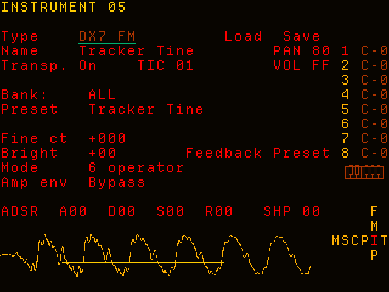
Select Type → FM → DX7 FM; DX7 is the seventh entry, after Arcade / YM2151. DX7 FM uses a six-operator MSFA core. The existing FM page offers Bank, Preset and Fine ct alongside common instrument settings. Preset browsing uses bank/category lists. Hold EDIT+PLAY to hear the highlighted sound; releasing stops audition. EDIT alone commits on release; OPT cancels. Loading a sound copies its complete patch without changing tracker tables or track insert FX.
The factory catalogue currently contains 67 distinct DX7 parameter patches: 31 OpenDX7 original musical sounds, four unique YSE CC0 sounds (its 32 bank slots repeat those four with different names), and 32 ChooChoo-authored patches. Here, "original" means parameter programs created for this project; it does not mean original Yamaha factory content. YSE is shipped as four sounds, not 32 artificially different names. Categories describe the reviewed sound-design intent. Ambiguous names remain Unsorted. Numerical playability checks have passed; listening acceptance is pending. The separate goal of 1,000 redistribution-cleared sounds is not met.
For a persistent personal library, put .syx files in
instruments/USER/dx7/. The older instruments/banks/dx7/ location remains accessible for existing libraries. Subfolders
are supported. Open DX7 → Bank: each file appears as a named bank, ready for
Preset browsing. Reopen Bank after adding or removing files; no conversion or
Load Instrument step is needed. A standard original DX7/TX7 bank contains
32 voices. A file with four bank messages appears as four numbered banks
(128 voices total). Single-voice files are accepted too. The native application
reads this folder; the browser build reads its virtual filesystem, not arbitrary
folders on the computer.
Bad or unsupported files are skipped with an on-screen count; valid banks remain available. Scanning is bounded to 2,048 files, 1 MiB per file, 64 MiB total, 60,000 voices and eight levels of nested folders. Symlinks are ignored. The selected patch is owned by the instrument: removing its source bank cannot change the saved song. The complete browsing library stays in this folder and is not copied wholesale into each project.
LOAD INSTRUMENT also accepts .syx original DX7/TX7 single-voice and 32-voice bank
dumps, including bounded sequences of those supported messages. It checks
framing, byte counts, seven-bit data, checksums, parameter ranges and file size
before opening the imported bank in the same FM browser. Selecting a patch
commits; cancel keeps the current song instrument. This direct-import shortcut
keeps its browsing list for the session; use the bank folder above for persistent
browsing. Save the song or a .cni to retain selected/edited patches. Headerless dumps,
bad checksums, DX7II performance/extensions and other Yamaha families are
rejected. Import never sends MIDI messages to external equipment.
CNI and project version 6 store all 155 original voice bytes, the full display name, native strike velocity, fine tuning and source identity. Songs need no external bank to reopen. Older ChooChoo releases cannot read these version-7 files; existing-only projects still save as version 5. Native velocity defaults to 100; tracker volume is post-synthesis gain and does not restrike the envelope. Operator envelopes, fixed-frequency mode, keyboard scaling, pitch envelope and LFO remain native patch behavior. The optional common FM amplitude ADSR shapes their combined output without replacing the operator envelopes.
Each track part has one LFO and four separately owned chord voice slots, matching the existing tracker chord/replacement policy. Tracks do not share note state. Note-off releases the native envelopes; cut/panic clears them. The scalar MSFA core uses 64-sample quanta at a fixed internal 44.1 kHz, with a streaming FIR to the output rate. Lookup tables are initialized once outside audio rendering so concurrent offline/live renderers cannot change one another's rate. Events take effect at the next internal quantum (up to 1.45 ms), followed by the FIR's approximately 0.25 ms group delay. Buffered samples are retained across callbacks. This is the MSFA Modern lineage, not a claim of bit-identical DX7 hardware or a Dexed Mark I emulation. DX7 is limited to 16 active notes across the song, including release tails, while retaining four owned chord slots per track. When over budget, it takes release tails first, then the quietest held notes, then fresh attacks. Equal attacks retain root notes across tracks before chord extensions, with stable slot/track tie breaking. This policy applies on every platform so the same song has the same bounded note allocation. It does not change other instruments' polyphony. Preset audition is disabled during playback. The limit was selected from R36H measurements and validated in mixed playback.
FM operator editor

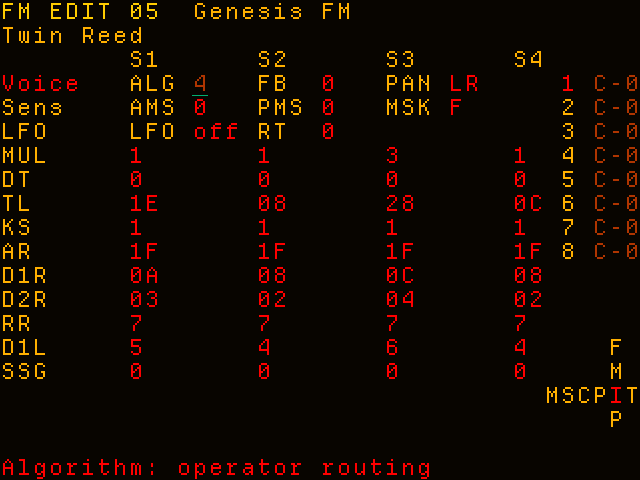
Genesis FM, Arcade FM, OPL2, OPL3, OPLL and VRC7 instruments have an EDIT button to the right of Fine ct. It opens a table of the patch parameters:
- Genesis FM / Arcade FM: algorithm, feedback, pan, AMS, PMS, operator mask and LFO settings, then MUL, DT, TL, KS, AR, D1R, D2R, RR and D1L for the four operators, plus SSG (Genesis) or DT2 and AM (Arcade).
- OPL2 / OPL3: feedback, connection and pan per voice, deep vibrato and tremolo, then MUL, TL, AR, DR, SL, RR, waveform, KSL, VIB, TRM, SUS and KSR per operator. On OPL3 the mode (2op, 4op, dual) can be changed here.
- OPLL / VRC7: the custom tone registers (feedback, MUL, TL, KSL, AR, DR, SL, RR, waveforms, AM, VIB, EG, KSR). Editing a ROM preset turns it into "Custom".
Left/Right and the usual edit keys change values; the instrument keeps playing as usual so you can hear changes. The status bar describes the parameter under the cursor. OPT or Left+Shift returns to the instrument screen. DX7 and SID have no operator editor.
Genesis FM and Arcade FM

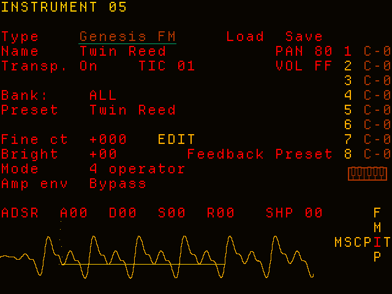

Genesis FM (YM2612) and Arcade FM (YM2151) now use the same FM Bank/Preset
browser, EDIT+PLAY audition, confirm/cancel and fine-tune controls. Genesis now
has 73 presets: the original 24 and 49 supported melodic programs from
NeoSoundFonts' CC0 16-Bit FM Music Station bank. Arcade has 81 presets: the
original 24 and 57 supported, sounding programs from YMulator-Synth's GPLv3
collection. The original ChooChoo pair shares its underlying recipes; the new
source collections provide separate palettes. These are named sound-design
collections, not claimed recreations of particular game soundtracks. Unsupported
note offsets, fixed percussion keys, arcade noise settings and silent source
programs are recorded as exclusions in expansion-manifest.json. Their complete
four-operator patch, envelope,
LFO, stereo and tuning settings travel inside version-6 instruments and songs.
The native chip envelope controls release; ordinary tracker gain and pitch do
not restart it. Genesis DAC output uses a 20 Hz DC blocker. Noise mode and
channel-3 special-frequency mode are outside this instrument implementation.
Native chip controls
Included in the pinned upstream build. The upstream reference describes these native engines as development features; platform limits still apply.
Native instrument waveform previews refresh when their controls are redrawn. FM instruments can overlay their optional Amp env curve; SID keeps its waveform preview without that FM-only overlay, including when browsing banks and presets.
All seven FM engines offer Bright, Feedback, and Amp env. Bright ranges from -63 to +63, with zero preserving the patch; it changes modulation operator levels while retaining carrier levels. Its audible effect depends on the algorithm. Feedback defaults to Preset, or overrides the native feedback with 0–7. These controls do not rewrite the saved native operator bytes.
Amp env defaults to Bypass. Select ADSR to add attack, decay, sustain, release and shape around the native sound. A/D/R use the shared 0–5 second quadratic range; sustain runs from silence to full level. Native envelopes still run, so this envelope cannot extend a sound beyond its native release. Preset browsing preserves the slot's FM amp and tone controls. All FM voices also use a 3 ms onset/retrigger transition and 1 ms tracker-gain smoothing, including when Amp env is bypassed. Hard cut/panic remains immediate.
The following phrase FX also appear as supported Modulation and motion-recording destinations. Values in the FX column are hexadecimal. Settings apply to playback without changing the saved instrument. Native GB sweep and envelope controls latch at the next note trigger; duty/width and noise frequency can change live.
| Engines | FX | Control |
|---|---|---|
| Native FM | OL1–OL6 |
Absolute operator output levels: OPLL/VRC7 modulator and OPL 00–3F; OPLL/VRC7 carrier 00–0F; Genesis/Arcade 00–7F; DX7 00–63 (0–99). Higher means greater output. Only supported operators appear. |
| OPLL/VRC7/OPL2/OPL3 | OAR, ODR, ORR, OSL |
Operator 1 attack, decay, release and sustain attenuation, 00–0F. |
| OPLL/VRC7/OPL2/OPL3/Genesis/Arcade | OMU 00–0F |
Operator 1 frequency multiplier. |
| Genesis/Arcade | LFR |
Native LFO rate: Genesis 00–07, Arcade 00–FF. |
| Arcade | LAD, LPD 00–7F |
Separate LFO amplitude and pitch depths. |
| Genesis/Arcade | LAS, LEN |
Native amplitude sensitivity 00–03 and LFO enable 00–01. |
| Genesis/Arcade | LPS 00–07 |
Native pitch sensitivity. |
| SID | SAT, SDE, SSU, SRL 00–0F |
Native attack, decay, sustain and release. Time values increase toward 0F; sustain increases toward full level. |
| SID | SPR 01–10 |
Silent partner frequency from 1× to 16×; affects ring modulation and hard sync. |
| All native FM | FBK 00–07 |
Absolute native feedback, initialized from the instrument. |
| All native FM with Amp env enabled; Sega/GB | EAT, EDC, ESU, ERL, ESH 00–FF |
Attack, decay, sustain, release, shape. These do not enable a bypassed FM amp. |
| Sega PSG | CMD 00–02, CNR 00–03 |
Tone / white noise / periodic noise; three fixed noise rates or tone-derived rate. |
| GB Pulse | CMD 00–03 |
Native pulse duty. |
| GB Noise | CMD 00–01, CND 00–07, CNS 00–0D |
Noise width, clock divisor and shift. |
| GB Pulse | CSP 00–07, CSS 00–07, CSD 00–01 |
Sweep period, shift, downward direction. |
| GB Pulse / Noise | CEI 00–0F, CEP 00–07, CED 00–01 |
Native envelope initial level, period, rising direction. |
Native FX selection uses the instrument in the phrase row's I column, or the
active instrument found by looking backward when I is blank. The FX popup
shows a short control description, its current preset value and valid command
range in a compact block. Selecting a different
native effect starts at that value; reopening the same effect preserves its
edited value. A multi-row selection resolves each row's instrument separately.
Tables use their instrument context. Native value edits stop at their legal
endpoints, including duty, noise, sweep, ADSR, feedback and operator levels.
The values are hexadecimal: for example, DX7's maximum 63 means decimal 99.
These FM commands use absolute native values. Operator commands always target
operator 1; OMU 03 selects its multiplier 3. DX7's tracker-specific controls
are operator levels and feedback. Preset/Range keeps its information color;
titles and descriptions follow the same colors as FM Feedback.
Live Modulation retains its full set of fixed-operator native destinations. Motion recording writes only controls represented by the compact tracker list; operator parameters record for operator 1 only. Other modulation destinations continue to work live but do not generate phrase commands.
SCP and SCT retain byte-scaled mappings to SID registers wider than 8 bits.
SMR 01–C8, SWV 01–08 and SPR 01–10 now match the native preset numbering.
Displayed preset values are base settings, independent of the playing envelope
or LFO. SLE works on operator levels and the direct FM parameters without
retriggering the note or changing the stored patch.
All native FX have descriptive titles, ranges and behavior in the phrase
FX chooser, plus value hints. CMD describes tone/noise, duty or noise width
according to the selected instrument. These controls supplement the shared
Track, Envelope and Modulation groups; the engine group alone is not the full
set of available phrase effects.
The existing shared LP/BP/HP filters on Braids, Plaits, PCM and other supported engines are software processing after synthesis. aChChid instead uses its native 303 filter path. This round adds no filter to AY or native FM; brightness changes FM synthesis itself. Track inserts remain available for additional processing.
Native instruments save in CNI version 7 (8 when absolute commands are present), and native songs in CCT version 9. Instruments containing imported sequences use CNI version 9 and songs containing them use CCT version 10. Older builds cannot open those newer sequence-bearing files. Stored FM preset bytes and instrument-page tone settings remain unchanged.
SID instruments and Phrase FX
Included in the pinned upstream build. The upstream reference describes these native engines as development features; platform limits still apply.

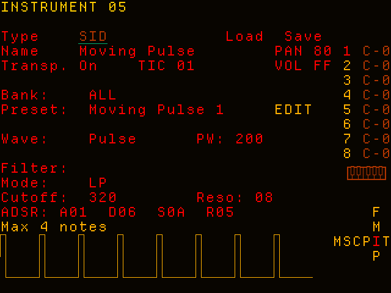

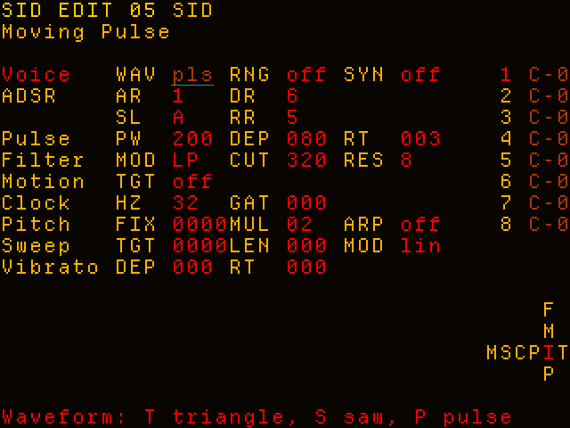
Choose CHIP → SID. Bank offers ChooChoo SID Originals (32 authored programs) and SIDkit Effects (24 MIT-licensed effects). Both use the same preset browser and save their complete selected program inside the instrument and song. No external bank is required when sharing the song. These are native SID parameter programs with envelopes and motion recipes, not sampled audio or complete C64 songs. The separate twelve GoatTracker research candidates are not shipped; their wave/pulse/filter tables need a dedicated importer/player.
The instrument page exposes waveform/pulse width, filter mode/cutoff/resonance and native ADSR controls. EDIT, beside the preset name, opens SID EDIT. Wave and PW have separate labels; Filter has a mode row, then Cutoff and Reso; ADSR labels sit beside their values. Touching each field selects that exact control. Existing parameter ranges and fine/coarse adjustment behavior are retained.
SID EDIT uses the FM editor's compact rows, theme colors, hexadecimal values and EDIT+direction controls. OPT or Left+Shift returns; EDIT+PLAY auditions the instrument. The page edits the existing stored patch directly, so changes are saved with the instrument and project.
SID EDIT groups waveform/ring/sync, native ADSR, pulse width and motion,
filter mode/cutoff/resonance and cutoff target, recipe clock and gate length,
fixed pitch/partner ratio/arpeggio, pitch sweep and vibrato. Values use native
ranges: pulse width 000–FFF, cutoff 000–7FF, ADSR/resonance 0–F, and SID
frequency registers 0000–FFFF. Rates for pulse motion and vibrato are in
tenths of Hz, displayed in hex. Clock HZ is 01–C8 (1–200 Hz); GAT and sweep
LEN count recipe ticks. GAT 000 waits for note-off, FIX 0000 follows the
played note, and sweep TGT 0000 disables the pitch sweep. Clear on the filter
TGT selects off; increasing from off selects 000. The filter sweep takes
GAT ticks, or 75 ticks when GAT is zero. Ring/sync share the silent partner
selected by MUL (01–10, 1–16 times the note frequency).
Imported source sequences remain intact. The source notice identifies embedded instrument macros or GoatTracker tables, not the song's Phrase/Table sequence. An asterisk marks a field whose base value is overridden; selecting it names the controlling waveform, pulse, filter or arpeggio macro in the message bar. All fields remain editable: this page edits the saved preset, not its embedded sequences. Changing an overridden base value may not change what you hear. Pulse macros also override recipe pulse depth/rate, and filter macros override the cutoff target. GoatTracker tables drive the voice directly, so editing the base recipe does not edit those tables. Source clock shows the imported tick rate in decimal; Clock HZ still sets the pulse/vibrato timebase, while gate and sweep lengths advance at the source clock.
An active SID parameter FX command also marks its base field while a track
plays this instrument. Selecting it identifies the track and command, for
example Track 2: SCT active; editing preset. The marker clears when playback
stops or the override ends. Editing is never blocked, and the displayed number
always remains the saved patch value, not a live meter. Edits do not change the
Phrase/Table FX command. Unrelated insert FX do not mark SID controls.
SID uses the pinned floooh/chips digital oscillator, envelope and per-cycle 6581-style filter. There are no alternate chip models, revision selectors or added character profiles. This is a generic approximation, not a calibrated R2/R3/R4/8580 analogue model.
Each note has its own filter. Ring/sync use a silent partner oscillator, so filter sharing and three-voice interactions differ from a physical SID. The handheld has a song-wide budget of four ordinary SID notes. Ring or sync costs two budget units per note, allowing two such notes, or one plus two ordinary notes. Chords and release tails count. Released notes are retired first; new notes take priority over older held notes. Expensive inserts and other synths still share the audio CPU budget.
| FX | Range | Action |
|---|---|---|
SCP |
00–FF |
Pulse-width base, scaled to native 12-bit width; recipe pulse motion remains active. |
SCT |
00–FF |
Cutoff base, scaled to native 11-bit cutoff; recipe filter motion remains active. |
SRN |
00–0F |
Native resonance. |
SWV |
00–07 |
Triangle, saw, tri+saw, pulse, tri+pulse, saw+pulse, tri+saw+pulse, noise. |
SFI |
00–07 |
Filter mode bits: 1 low-pass, 2 band-pass, 4 high-pass; 0 bypass. |
SMR |
00–FF |
Recipe macro clock, scaled from 1 to 200 Hz. |
SRG |
00–01 |
Triangle ring modulation with silent partner. |
SSY |
00–01 |
Oscillator sync with silent partner. |
Pulse width and cutoff support SLE. Discrete waveforms, switches, resonance
and FM feedback retain their useful native steps; wider byte values would not
create more hardware states. FBK directly selects feedback 00–07.
Operator levels use the engine-specific ranges listed above. Brightness and
master adjustments retain the full byte range.
Sampler
Instrument → Type → Sampler

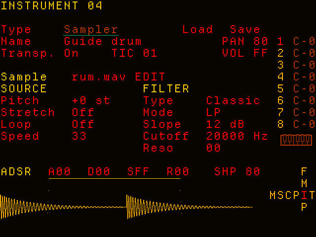
Turn a WAV file into a playable instrument. Set its pitch and playback behaviour, then use the filter and envelope to make it fit the track. Open Sample Edit for regions, slices, and audio processing.
On this screen
- Sample
- Load the source WAV file.
- EDIT beside Sample
- Open the waveform editor for detailed sample work.
- Pitch / Loop / Speed
- Transpose playback, choose looping behaviour, and adjust playback speed.
- Filter / ADSR
- Shape the sample’s tone and amplitude, as with a synth voice.
| Control | What it does |
|---|---|
| Open the sample browser. | |
| EDIT + LEFT / RIGHT on Sample | Load the previous or next WAV in the same folder. |
| Open the sample editor. | |
| Adjust the selected playback or tone parameter. | |
| EDIT + PLAY | Preview the instrument. |
In depth
Open a topic for detailed controls, values and workflows.
Sample files and detailed editing
Load a PCM WAV, then use EDIT beside its name for regions, slicing, processing and saving. See the complete Sample editor reference. A project stores the sample path: keep the WAV with your library when moving the project. Processing and saving the project are separate operations.
Sample editor
Sampler → EDIT beside the sample name

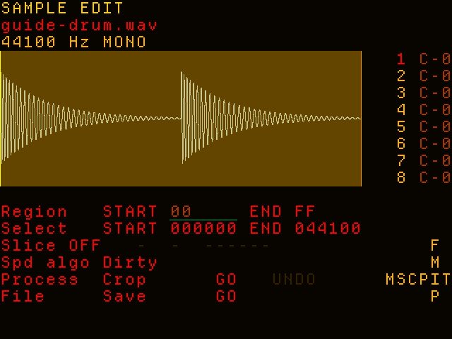
Work directly with the waveform. Define the part that plays, divide it into slices, and process a selected region. The selection used for processing is separate from the instrument’s playback region.
On this screen
- Waveform
- Shows the sample, playback region, and processing selection.
- Region / Select
- Set the playback limits and the region used by editing operations.
- Slice
- Choose Off, Equal, Auto, or Lazy slicing. Adjust the count and individual slice starts.
- Spd algo
- Choose Dirty or Clean time-stretch processing.
- Process / GO
- Choose Crop, Normalize, Delete, Silence, Fade In, Fade Out, or Reverse, then apply it.
- UNDO
- Toggle the most recent processing operation; this history is cleared when you leave the editor.
- File / GO
- Choose Save or Save As and write the edited WAV.
| Control | What it does |
|---|---|
| Move between editor fields. | |
| Adjust the selected boundary or value. | |
| Run the selected process or file action. | |
| Restore the previous processing state. | |
| Return to the instrument. | |
| Equal slice boundaries appear on the waveform. | |
| The sample is divided again using the selected count. | |
| The highlighted slice region follows the slice browser. |
Processing changes the sample in memory. Save writes the WAV; save the project too to retain the instrument and arrangement settings.
In depth
Open a topic for detailed controls, values and workflows.
Sampler: regions, slices, processing and saving

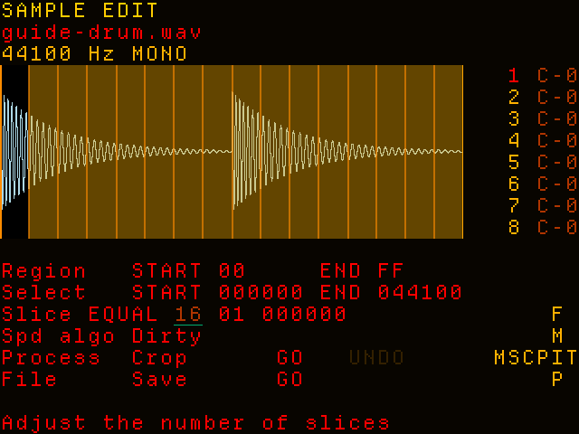
This clean Sample engine plays mono or stereo PCM samples loaded into RAM.
- Tap Sample to load an uncompressed
8-bit,16-bitor24-bitPCM WAV. Press PLAY in the browser to audition the highlighted file. - When a sample is loaded, EDIT appears next to its name. Tap it to open the Sample Edit screen. OPT or SELECT + [LEFT] returns to the instrument.
- The Sample Edit screen shows the filename (with a
*marker when the sample in RAM differs from the file on disk), a format readout (sample rate, channels), a tall waveform, and the Region, Select, Slice, Process and File fields. - Edits live in RAM only until a save flow writes them: the project stores the sample's file path and reloads the WAV from disk on the next project load, so leaving the tracker without Save/Save As discards process operations (the
*marker is the warning). Loading a different sample into the instrument also discards unsaved edits and resets the Region to the full sample (Start00, EndFF). - Region sets the playback Start/End markers, also available on the Sampler instrument screen. They set normalised playback boundaries (
00-FF); if Start is after End, the sample plays in reverse. EDIT + [LEFT/RIGHT] fine-adjusts the marker in steps of one (01) and zooms the waveform around it while EDIT is held; EDIT + [UP/DOWN] coarse-adjusts (step 16) and returns the view to the full sample. EDIT + OPT resets the marker to its default (Start00, EndFF). - The waveform view zooms to a fixed window of one second of audio around the edited marker and pans to keep it visible; samples that fit inside the window stay at the full 1:1 view. The zoom is transient: it lasts while EDIT is held, and releasing EDIT returns to the full 1:1 view, as do coarse steps. Entering the screen always resets the view to the full sample.
- Select sets a processing selection in absolute frames, independent of the playback Start/End markers. EDIT + [LEFT/RIGHT] moves a handle twenty frames and zooms onto it while EDIT is held; EDIT + [UP/DOWN] jumps by
frameCount/64(minimum 16) and returns to the full-sample view. EDIT (tap) on a handle copies the current Start or End marker position to it. EDIT + OPT on either handle empties the whole selection. When the selection is empty both handles show-; when the handles are inverted they swap automatically. The selection is session-only editor state: it is not saved with the project, and entering the screen seeds it with the playback Region span (the whole sample with the default markers). - Slice is a single row with four value cells - Mode, Count,
Slice and Frame - and is saved with the instrument. Off plays the
Start/End window. Phrase notes select slices chromatically from C-0, and
notes past the last slice wrap around to the beginning (note N plays slice
N % count, so a run past the last slice cycles back to the first one). Sliced notes do not transpose pitch or use Scale quantization, but CRD keeps the selected slice and transposes its voices as a chord. Slice starts are marked on the waveform with short two-pixel-wide lines (dark orange; the current slice's line is brighter), and the slice under the cursor gets a black background band on the waveform (the selection tint is not drawn over the band, so it stays fully black and clearly distinct from the rest of the preview).- Mode cycles
OFF/EQUAL/AUTO/LAZY(EDIT + left/right or tap; EDIT + OPT turns slicing off). Switching modes initializes the slice points: EQUAL divides the Start/End window evenly into Count parts; AUTO runs a transient detection over the window and places a slice on every onset it finds (up to Count); LAZY starts with one slice covering the whole window. Switching to LAZY stashes the current EQUAL/AUTO setting (count and bounds), and switching back to EQUAL or AUTO restores it verbatim - no confirmation is asked and nothing is lost. Slice and Stretch are mutually exclusive: enabling one disables the other, and the Slice cells are dimmed while Stretch drives the duration. - Count shows the total number of slices (
01..64). EDIT + [LEFT/RIGHT] steps it by one (minimum 1, maximum 64), EDIT + [UP/DOWN] cycles through the power-of-two counts2 / 4 / 8 / 16 / 32 / 64with wrap-around. Every change recalculates the division: EQUAL re-divides the window evenly, AUTO re-runs detection with the new target (the detection sensitivity is derived from the count - more slices mean a more sensitive threshold). The box shows-when the mode is OFF. In LAZY it stays bright (it counts the hand-placed slices) but is display-only: the cursor skips it — moving right from Mode or left from Slice lands on Slice, coming down from the Select row's END marker lands there too, and touching the box does nothing (hand-placed slices have no division to recalculate). EDIT + OPT and a plain EDIT tap do nothing here: turning slicing off lives on Mode, deleting a slice lives on Slice. - Slice is the browser: it shows the 1-indexed current slice
(
01..count). EDIT + [LEFT/RIGHT] moves between slices one at a time, EDIT + [UP/DOWN] jumps four slices (both clamped, no wrap-around); the browsed slice is indicated on the waveform by its brighter marker and the black band, and the zoomed view recenters on the slice start. EDIT + OPT deletes the current slice (it merges into the previous one; the first slice cannot be deleted, and deleting the last remaining slice turns slicing off - bounds survive an OFF round-trip and come back when a mode is picked again). EDIT (tap) previews the currently selected slice as a one-shot playback (works in every slice mode; the preview stops when the key is released or when you leave the screen). The box shows-when the mode is OFF. - Frame shows the current slice's start frame in hex. EDIT + [LEFT/RIGHT] nudges it by ten frames (zooming onto the marker while EDIT is held), EDIT + [UP/DOWN] nudges by one hundred and returns to the full view. A marker stays inside its own slice: it cannot cross the previous or next slice start. EDIT + OPT deletes the slice.
- B exits to the instrument screen from the Slice row like everywhere else on this screen; SELECT + LEFT exits from anywhere.
- LAZY workflow: with LAZY selected, tap PLAY to start a one-shot
full-sample playback - it plays once from the start and stops by
itself at the sample's original pitch and speed (a green two-pixel
marker follows the position on the waveform); tapping PLAY again
stops it early. While it plays,
every EDIT click drops a slice at the playback position, no matter
where the cursor is (slices closer than 50 ms to an existing one are
rejected with
Too close to slice). Playing the sample again keeps the existing chops and adds new ones at every tapped position, in order - the Count box refreshes with every dropped slice and the Slice browser follows the new one. The same browsing and editing rules as the other modes apply to hand-placed slices: EDIT + direction on Slice browses them, Frame adjusts the selected start, EDIT + OPT deletes the current slice. The Frame cell dims while the playback-drop is armed. SELECT + PLAY is not intercepted in LAZY: it starts phrase playback like on every other screen. LAZY slices play back in the sequencer just like EQUAL and AUTO: phrase notes map chromatically from C-0 onto the hand-placed slices, wrapping around past the last one. - Combo hints: while the cursor rests on a Slice row cell and no other
message is showing, the status bar shows that cell's hint and keeps it
up while the cursor rests there. On Mode the hint is bound to the
active mode and shows only the description (the mode name is already in
the cell):
Divides sample in equal parts,Divides sample based on transients,Press Play and add slices with EDIT- switching modes swaps the text immediately, and OFF clears the bar. On Count it showsAdjust the number of slices, on SliceBrowse slices, on FrameAdjust slice start. Any action message replaces the hint until it expires.
- Mode cycles
- Process selects a destructive editing operation: Crop, Normalize, Delete, Silence, Fade In, Fade Out or Reverse (EDIT + left/right cycles, tap cycles forward, EDIT + OPT sets none). GO (same row) runs the selected operation on the current selection, or on the whole sample when the selection is empty. Crop keeps only the selection; Normalize scales the selection so its peak reaches full scale (both channels share one gain so the stereo image is preserved); Delete removes the selection and joins the tails (deleting the whole sample is rejected); Silence zeroes it; Fade In/Fade Out ramp the selection linearly from/to silence; Reverse plays the selection backwards (frames are swapped in place, both channels of a frame move together, length and markers are unchanged). Crop and Delete require a selection — with an empty selection they show
Select region first. Every operation pauses audio briefly, keeps a one-level undo, and marks the sample as changed in RAM: the file on disk is not touched until the Save flows (see below), and leaving the screen discards the undo slot. - UNDO (next to GO) swaps the sample back with the state before the last operation. It is dimmed until an operation runs, toggles between the pre-op and post-op states on repeated presses, and is cleared when the screen is re-entered.
- File holds the save flows. The instrument stores the full path of the WAV it was loaded from; these flows write that file or point the instrument at a new one. They never touch the instrument name.
- The File field cycles between Save and Save As (EDIT + left/right or tap); GO (same row) runs the shown action.
- Save overwrites the WAV the sample was loaded from. For a sample
without slices it asks
Overwrite <name>?first. A sliced sample first opens the SAVE SLICES dialog asking where the slice points belong: SAVE TO SAMPLE writes them into the WAV as cue chunks (portable - DAWs show them as markers) and keeps them in the project too, SAVE TO PROJECT writes a plain WAV and keeps the points in the project only, CANCEL aborts. ADon't ask again in this projectcheckbox stores the picked destination with the project and skips the dialog from then on (the choice is saved as- Sample save choice:in the .cct and can only be changed by editing the project file). The dialog is skipped for samples without slices. Save is dimmed (and skipped in navigation) until a sample with a file path is loaded. A failed write keeps the dirty marker and shows the error. - Save As writes the current sample to a new file: enter a file name (pre-filled with the current name without extension), then pick a folder in the browser. The sample is written as
<folder>/<name>.wav, the instrument points at the new file, and the folder is remembered as the default sample folder. It is dimmed (and skipped in navigation) until sample data is loaded, so a freshly loaded sample can be given a file path. Paths longer than 255 characters are rejected. - The
*marker before the filename means the sample in RAM differs from the file on disk (any process operation sets it, Save and Save As clear it). The marker is session-only: it is not saved with the project and resets when the screen is re-entered. If several instruments reference the same WAV file, saving one overwrites the file for all of them.
- On the Sample instrument screen, use EDIT + [LEFT/RIGHT] to load the previous or next WAV in the same folder.
- Pitch transposes by semitones (
-48to+48). - Loop selects Off, Loop or Ping-Pong.
- Speed controls granular time-stretching from
0%to500%(100%is normal).
Unsupported WAV formats display an error. Convert unusual files to PCM8, PCM16 or PCM24 WAV before importing them.
Table
Instrument → SELECT + RIGHT

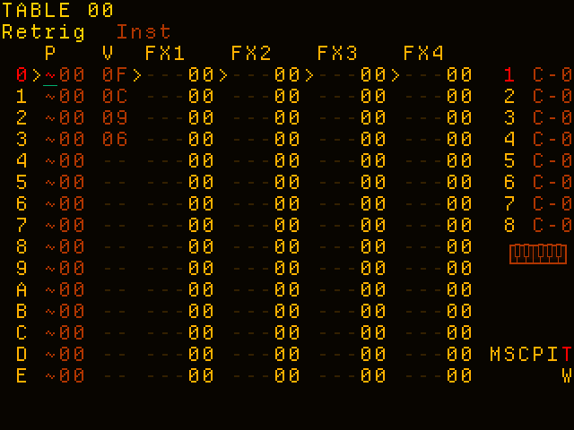
A table is a short sequence that changes a sound while notes play. Use it for pitch movement, rhythmic volume changes, and effect automation. Its timing is measured in ticks rather than phrase steps.
On this screen
- Pitch
- Relative pitch (~) or an absolute note (=).
- Volume
- A 00–0F multiplier applied on top of the instrument envelope.
- FX lanes
- Four command lanes, each able to run at its own tick speed.
- Retrigger
- Choose whether the table restarts with the instrument, phrase, chain, or runs freely.
| Control | What it does |
|---|---|
| Adjust the selected pitch, volume, command, or value. | |
| Open the effect chooser. | |
| Return to Instrument. | |
| Open AY Wavetable. | |
| Hold SELECT, then press OPT to enter selection mode. Release both; use directions to extend the range. Repeat SELECT + OPT to cycle selection ranges. | |
| Tap and release OPT to copy selected cells and leave selection mode. | |
| Cut selected cells and leave selection mode. | |
| Hold SELECT, then press EDIT to paste copied cells at the cursor. | |
| Retrig cycles through Phrase, Chain and Free. | |
| The copied ARP command and value appear in Table FX1. |
Each instrument has a default table with the same number. A TIC command on the last row can set an individual FX lane’s speed. Start selection on a data row, below the timing header.
In depth
Open a topic for detailed controls, values and workflows.
Table timing, loops and auxiliary tables
Tables are a core sound design tool in trackers. In Vortex Tracker terms, they combine instruments and ornaments, but they can do much more. If you know LSDj or NerdSEQ, the idea should already feel familiar.
The Pitch column accepts relative (~) or absolute (=) pitch values in semitones. The Volume column is 00-0F, applies to every engine on top of its envelope, and can be used for a gate: alternate 0F and 00 then loop with HOP 00. The 4 FX lanes mostly match the lanes in a phrase, although a few FX behave differently in tables.
Putting a TIC FX on the last table row sets the speed of that column and overrides the instrument's default table speed. Each FX column can run at a different tick speed. The Pitch and Volume columns follow the speed of the 1st FX column.
A 16-row table may look short next to a long Vortex Tracker instrument, but the HOP FX can create conditional loops such as "repeat these rows 5 times", as well as nested loops. With loops and independent FX column speeds, those 16 rows can go a surprisingly long way.
Retrigger mode
The Retrig field at the top of the Table screen selects when an already active table restarts. Inst is the default and compatible mode: a phrase row containing an instrument selects that instrument's default table and starts it at row 00. Phrase restarts an active table when playback enters a phrase, Chain when it enters a chain, and Free leaves it running until the track stops or an explicit command replaces it.
A structural mode never reaches backward in time. If a track has no active instrument table, the first phrase row that introduces an instrument activates its table at that exact row, even if it is row 4, 8 or F of a phrase. Later instrument numbers do not replace an active Phrase, Chain or Free table. This makes tables useful as LFO-like automation without silently simulating earlier phrase steps.
TBL, TBX and RET are always explicit actions: they select or restart immediately, whatever the mode. On a Phrase or Chain boundary, its restart happens before the new phrase row is read, so a TBL or TBX on that row has the final say. Table row 00 FX therefore run again normally; cumulative FX retain their usual accumulation.
Tables 00-7F are reserved for default instrument tables. Tables 80-FE are intended for auxiliary tables started by the TBX effect. The lower range also works for auxiliary tables, but using it that way can cause unexpected conflicts and confusion.
Copy FX between Phrase and Table
Select only FX name/value columns, then copy or cut them from a Phrase and paste them into any FX lane of a Table, or do the reverse. The copy keeps the exact selected cells, so a command-only or value-only selection remains partial. Pasting begins at the current FX cell and is clipped at row F and the destination's final FX lane. Notes, instrument numbers, pitch and volume never cross between these two screens.
Controls
- EDIT + [UP/DOWN] on an FX name column: open the FX selection screen
- OPT + [DIRECTION]: move between tables
Modulation
Instrument → SELECT + UP

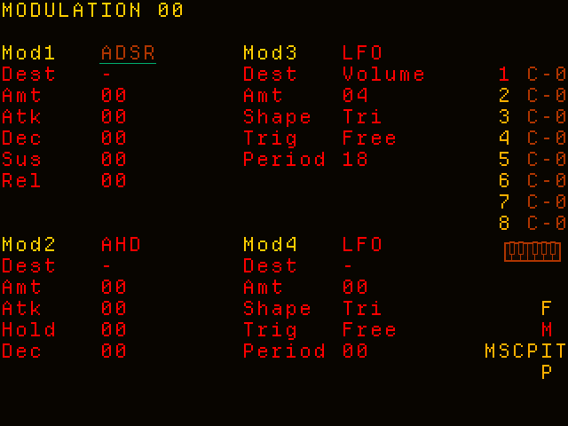
Give an instrument movement with four modulation slots. Each slot connects a source to a destination and sets how strongly it acts. Envelope, LFO, and stick sources expose different controls.
On this screen
- Mod1–Mod4
- Choose the source for each slot.
- Dest
- The parameter to move. Available destinations depend on the instrument.
- Amt
- Depth and direction of modulation.
- Source parameters
- Envelope stages, LFO shape/trigger/period, or stick behaviour, depending on the source.
| Control | What it does |
|---|---|
| Open its grouped chooser. | |
| Adjust the selected value; on Destination, LEFT / RIGHT cycles destinations. | |
| Browse instruments. | |
| Return to Instrument / open Insert FX. | |
| STICK LIVE | Apply configured stick modulation without writing it to a phrase. |
| MOTION RECORD / MOTION ERASE | During playback, write changed stick destinations into FX cells / erase matching motion FX. |
In depth
Open a topic for detailed controls, values and workflows.
Sources, destinations and LFOs
Each instrument can have up to 4 modulation slots. Audio instruments can target Instrument Pan or Track Pan; both use 00 for left, 80 for centre and FF for right.
The available modulation types are:
- ADSR - classic attack-decay-sustain-release envelope
- AHD - attack-hold-decay envelope
- LFO - low-frequency oscillator with several shapes
- SLFO - LFO with a period multiplier for slow cycles
- FLFO - audio-rate LFO that can reach the kHz range; FLFO can be heavy on the CPU
- SLIN - linear joystick control
- SRAT - rate-based joystick control
The list of modulation destinations depends on the instrument type.
For a Cutoff destination, Amount is exponential with a quadratic response: 25% reaches 4.5 semitones, 50% reaches 18 semitones, 75% reaches 40.5 semitones, and 100% reaches six octaves. This keeps fine control at low amounts while still allowing deep sweeps.
When an ADSR or AHD envelope targets Volume, it becomes the instrument's volume envelope. An LFO targeting Volume offsets the current output volume instead.
The modulation amount can be positive or negative. Its range depends on the destination. If the destination's full range is 127 or less, as it is for most parameters, the amount defines an absolute range. Wider destinations such as pitch use a scaled amount.
All duration parameters, including attack, hold, decay and period, are measured in ticks.
LFO shapes:
- Tri - bipolar triangle wave
- Sin - bipolar sine wave
- UniTri - unipolar triangle wave
- UniSin - unipolar sine wave
- RampDn - linear ramp down (saw wave)
- RampUp - linear ramp up (saw wave)
- ExpDn - exponential ramp down (exponential saw wave)
- ExpUp - exponential ramp up (exponential saw wave)
- Square - square wave
- Random - sample-and-hold random wave
- Wavetable - reads one of the project's 32-step AY wavetables. Values
00to0Fmap from-100%to+100%without interpolation.
LFO trigger types:
- Free - restarts the LFO only when the instrument changes
- Retrig - restarts the LFO on every note
- Phrase - restarts LFO and SLFO when playback enters a new phrase
- Chain - restarts LFO and SLFO when playback enters a new chain
- Hold - stops after 1 cycle and holds the last value
- Once - stops after 1 cycle and returns to zero
Motion recording
- STICK LIVE (
L1by default) applies stick modulation without changing the phrase. In Settings > Stick live mode,HOLD(the default) enables it while held;TOGGLEenables it on one press and disables it on the next;FREEleaves it permanently enabled. Releasing the button inTOGGLEleaves it enabled. - During playback, hold MOTION RECORD (
L2) to apply stick modulation and record changed destinations as absolute FX values. - Hold MOTION ERASE (
R2) to remove matching destination FX from the current row.
The bottom-right ~ indicates active Stick live. Record (*, or ! for overflow) and Erase (x) take indicator priority and remain momentary in both modes. Both enable live stick processing while held; releasing them leaves a separately enabled live toggle intact.
The mode is saved with application settings, but the live toggle always starts off on launch. Changing modes clears the toggle: HOLD follows any currently held Stick live button, TOGGLE waits for a fresh press, and FREE is active immediately.
Motion recording writes track FX into the phrase currently playing. It updates matching FX first, then uses empty slots from right to left. It never overwrites a different FX. If all 3 slots are full, that motion is not recorded on the step. A ! in the bottom-right corner means that more destinations changed than the 3 FX columns could hold.
Motion recording supports Braids, Plaits, Sampler, 2xSCWF, BYOWTBL and Bogie destinations, including active Bogie macros and filter controls where applicable.
Instrument Pool
Instrument → SELECT + DOWN

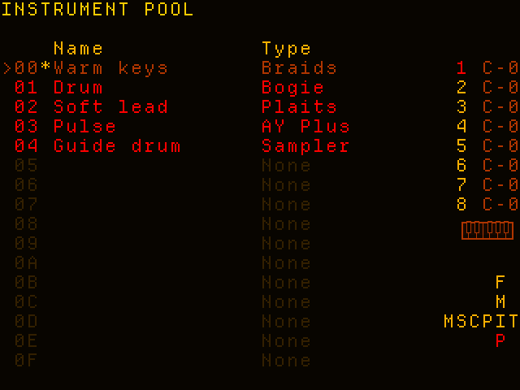
An overview of the instruments stored in the project. Use the pool to find a sound quickly, preview it, and return to its editor.
On this screen
- Instrument number
- The number used by the I column in a phrase.
- Instrument name
- The saved name, or engine name for an unnamed instrument.
| Control | What it does |
|---|---|
| Move through the pool. | |
| EDIT + PLAY | Preview the highlighted instrument. |
| Open the highlighted instrument’s editor. | |
| Copy the instrument and its default table. | |
| Paste into the chosen instrument slot, replacing its contents. | |
| The selected instrument moves down in the pool. |
In depth
Open a topic for detailed controls, values and workflows.
Reordering and preview
The Instrument Pool shows every instrument in the project and lets you reorder them. During playback, it also shows which instruments are currently active.
Controls
- EDIT: edit the instrument and jump to the Instrument screen
- SELECT + OPT: copy the instrument
- SELECT + EDIT: paste the instrument
- EDIT + [UP/DOWN]: reorder instruments
- EDIT + PLAY: preview the instrument
AY Wavetable
Table → SELECT + DOWN

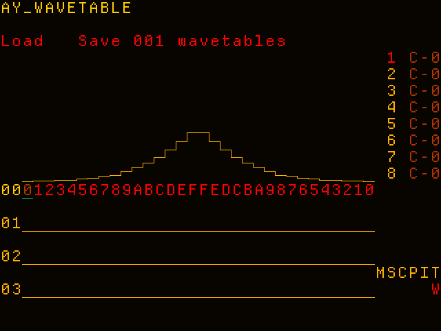
Draw a 32-step waveform for the AY wavetable oscillator or a wavetable LFO. The large preview shows the current wave; neighbouring previews help compare nearby waves.
On this screen
- Waveform steps
- 32 values, each from 0 to F, defining the wave’s shape.
- Load / Save
- Import or export .aywave data.
- Save count
- Choose how many consecutive wavetables to save.
| Control | What it does |
|---|---|
| Move along the waveform steps. | |
| Change the current step’s height. | |
| Choose a neighbouring wavetable. | |
| Move backward or forward by 16 wavetables. | |
| EDIT on Load / Save | Open the corresponding file operation. |
| Return to Table. | |
| The same wave is drawn as linear modulation steps around the centre line. | |
| The new wavetable slot contains the copied shape. |
This editor is for AY-style wavetables. The BYOWTBL instrument loads its own WAV-based wavetable files.
In depth
Open a topic for detailed controls, values and workflows.
Mixer
Song → SELECT + LEFT

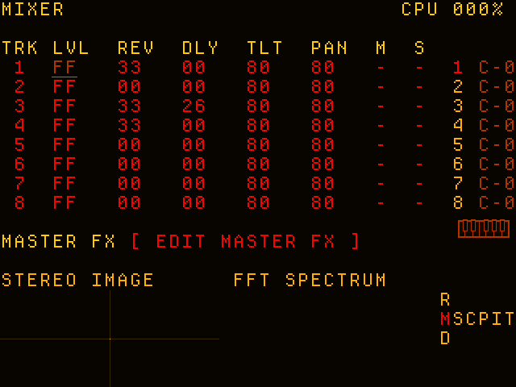
Balance the eight tracks and their shared effects. Mixer settings belong to a track, so they stay in place when that track changes instruments. The meters show left and right signal levels.
On this screen
- LVL / PAN
- Track level and stereo placement.
- REV / DLY
- Send levels into the shared reverb and delay.
- TLT
- Tilt EQ: 80 is neutral; lower values favour bass, higher values favour treble.
- M / S
- Mute or solo the track.
- MASTER FX
- Open two insert slots for the complete mix.
- Meters / CPU / CLIP
- Readouts for signal level, processing load, and clipping.
| Control | What it does |
|---|---|
| Choose a track and mixer field. | |
| Adjust a level, pan, or tone value. | |
| Toggle mute or solo. | |
| Open the master insert effects. | |
| Open Reverb / Delay. | |
| Return to Song. |
In depth
Open a topic for detailed controls, values and workflows.
Mixer meters
The Mixer shows adjacent L/R peak bars for each track after its PAN and tilt, before shared effects and master gain. The meter spans -48 to 0 dBFS and decays between updates. Its lower and middle bands use theme colors, while the top band is bright red near full scale.
Track levels, pan and sends
The Mixer is the leftmost main screen. It displays CPU load and clipping warnings. A red ! in the CLIP column marks the track whose dry signal pushed the mix beyond the safe range.
Use it to balance the 8 tracks, shape each track with Tilt EQ, and send audio to the reverb or delay:
| Field | Meaning |
|---|---|
| LVL | Post-engine track level, 000-100 |
| REV | Send to the shared Clouds or Beads reverb, 000-100 |
| DLY | Send to the shared ping-pong delay, 000-100 |
| TLT | Per-track Tilt EQ, 00-FF; 80 is neutral, low values favour bass and high values favour treble. Low values will introduce a soft overdrive. |
| M | * mutes this track |
| S | * solos this track |
The mixer is track-based, not instrument-based. If a track changes instruments, its level, PAN, Tilt and sends remain attached to the track. Instruments also have their own 00-FF Vol and Pan in the top row of the Instrument screen. Instrument PAN is applied first, then track PAN. Both preserve an existing stereo image at centre; they progressively attenuate the opposite side when moved left or right.
Insert FX
Instrument → SELECT + UP → SELECT + UP

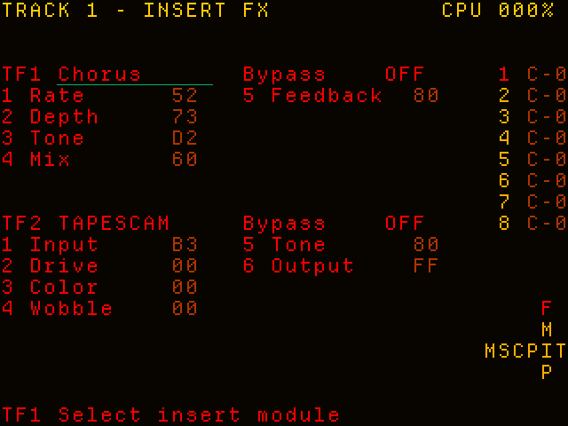
Process the selected track with two effects in series: TF1 feeds TF2. Each module exposes its own parameters. The Master FX version uses the same layout for processing the complete mix.
On this screen
- TF1 / TF2
- Choose an effect for each slot, or Off to leave it empty.
- Bypass
- Temporarily skip a slot while retaining its settings.
- Numbered parameters
- Controls for the selected module. Names change with the effect.
- CPU
- Current audio processing load.
| Control | What it does |
|---|---|
| Move between the two slots and their parameters. | |
| Open the module chooser. | |
| Adjust a module or parameter value. | |
| Set that slot’s bypass off or on. | |
| Return from track Insert FX to Modulation. | |
| OPT, in Master FX | Return to Mixer. |
| Select the previous or next track. | |
| Pitch moves above its neutral value of 80; the hint shows the transposition. |
Track inserts can be automated with matching FX and modulation destinations. Master inserts are project settings and do not use track automation.
In depth
Open a topic for detailed controls, values and workflows.
Master FX
The MASTER FX entry opens a two-slot Insert FX sub-menu for the complete mix. Its effects run after the reverb and delay returns, before the master volume. Select a module, edit its parameters or bypass it exactly as for a track insert; press OPT to return to Mixer. Master FX settings are saved with the project and are not automated by phrase, table or modulation.
Modules, parameters and automation

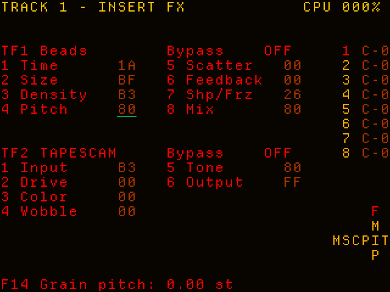
Each of the eight tracks has two serial slots, TF1 → TF2. From Instrument, use the usual Shift+Up gesture to open MOD, then Shift+Up again for F: Insert FX. Shift+Down returns to MOD. OPT+Left/Right selects the track (1–8), without changing the instrument selector. The module header opens the existing chooser; bypass retains the module, configured values, and automation. Parameters are byte values: left column 1–4, right column 5–8. Context text shows full names and decoded values. Old projects load with both slots OFF.
The navigation display keeps the full F–M–I–P column visible throughout the instrument screens, including Insert FX and the instrument pool, and highlights the current screen.
| Module | Parameters in order |
|---|---|
| Work Compressor | Threshold, Attack, Release, Makeup, Ratio, Detector source, Detector filter, Mix |
| Airwindows Distortion | Input, Mode, Output, Mix |
| Airwindows StereoDoubler | Detune, Mix |
| TAPESCAM | Input, Drive, Color, Wobble, Tone, Output |
| OTT (Rui-727) | Depth, Time, Upward, Downward, Input, Output |
| Chorus | Rate, Depth, Tone, Mix |
| Flanger | Rate, Depth, Feedback, Mix |
| Phaser | Rate, Depth, Feedback, Mix |
| Rotary | Speed, Depth, Drive, Mix |
| Saturation | Drive, Tone, Level, Mix |
| Bitcrusher | Bit depth, Rate reduction, Tone, Mix |
| Destruction | Mode, Amount, Tone, Mix |
| Parametric EQ | Low gain, Low frequency, Mid gain, Mid frequency, High gain, High frequency |
| Trance Gate | Pattern, Rate, Length, Gate, Phase, Mode, Smooth, Mix |
| Beads (Mutable Instruments) | Time, Size, Density, Pitch, Scatter, Feedback, Shape/Freeze, Mix |
Continuous controls use 00–FF, including valid zero and maximum FF. Bipolar controls have an exact neutral at 80. Distortion modes are 00 Density, 01 Drive, 02 Spiral, 03 Mojo, 04 Dyno. Compressor ratios 00–07 are 1.5, 2, 3, 4, 6, 8, 16, 20:1; detector sources 00–02 are stereo input, left, right. Detector filter 80 is neutral, below is low-pass, above is high-pass. No external/cross-track sidechain is provided. Either slot can contain any module; repeated modules are independent. Chorus, Flanger, Phaser and Rotary use gentle modulation defaults. Rotary Speed uses the full 00-FF range: 00 = 0.01 Hz (one rotation per 100 seconds), FF = 25 Hz (the former Chaos maximum). Exponential spacing gives finer control over slow LFO movement. New Rotary inserts default to 8F, about 0.8 Hz. This replaces the four discrete speed values; existing Rotary settings and F11/F21 speed automation need retuning to the new scale (old Slow/Fast/Hyper/ Chaos correspond approximately to 8F/CB/E7/FF). Other parameters are unchanged. Bitcrusher bit depth ranges from 4 to 16 bits and rate reduction from 1x to 32x. Destruction modes are Fold, Clip and Crush. Saturation and distortion include output level or mix controls for balancing them against the unprocessed signal. Parametric EQ has 24 dB boost/cut shelves at 60–500 Hz and 2–14 kHz, plus a fixed-Q 0.9 bell at 250 Hz–5 kHz. Its gain controls are neutral at 80; with all three neutral it is an exact bypass. Active EQ uses a transparent soft knee above full scale and reaches a maximum of 1.5 to contain extreme boosts.
Trance Gate is a tempo-synchronised amplitude sequencer for pads, leads and stabs. Pattern values 00–3F select named musical motifs; 00–1F are core grooves and 20–3F are experimental variations. Their binary masks are intentionally not shown. Rate offers straight, triplet and dotted values from 1/2 to 1/32. Length truncates the independently rotated 16-step motif to 1–16 steps. Every track note-on restarts the sequence; note-off leaves it running through the release. Forward, Reverse and Ping-Pong define traversal; Chaos uses a repeatable density-preserving mutation every four loops. On the master insert it follows transport time without note retriggers. Gate sets each open step's width, Smooth rounds its edges while retaining a click-safe minimum fade, and Mix crossfades between dry and gated audio.
Beads uses the original Mutable Instruments granular DSP as a stereo insert. Choose Beads in either track or master insert slot. Its eight controls also use existing F11–F18 / F21–F28 commands and insert MOD destinations; no new FX IDs or project format are needed. Grains run continuously without additional events.
- Time: position in the four-second recording buffer.
- Size: long reverse grains at 00, shortest grains around 55, then progressively longer forward grains. FF enters the original delay mode after its transition.
- Density: regular grains below the center, random timing above it; the center dead zone stops new grains. Moving away from center increases the rate.
- Pitch: −24 to +24 semitones; 80 is exact unison.
- Scatter: 00 is no parameter randomness. Increasing it applies Beads' internal uniform Time randomness at full amount and Size randomness at half amount, independently for each grain. Pitch and Shape remain at their set values.
- Feedback: returns processed grains into the recording path.
- Shape/Freeze: 00–7F records, 80–FF freezes. Within either range, the low seven bits sweep the same envelope from rectangular through decay and bell to reverse. Add/subtract 80 to toggle freeze without changing Shape: 40 and C0 have the same envelope. The value hint shows envelope position and Recording/Frozen status. Hold EDIT with Up/Down to change by 10 hex (16); Left/Right changes by 1. This packed control is discrete so slew does not sweep through the freeze bit; modulation of its whole byte can intentionally cross between the two states.
- Mix: 00 is exact dry, FF is fully processed. Changes are smoothed.
This eight-control adaptation uses digital stereo quality and latched Seed.
Internal reverb, other recording qualities, external clock/trigger inputs and the
unpatched-input wavetable synth are not exposed. Track reverb sends remain
available. Freeze holds runtime audio, not a sample saved with the project;
resetting/reselecting the module clears its buffer. Recording memory is allocated
only for slots selecting Beads, including bypassed slots, before the audio thread
receives the edit. Multiple track and master instances remain independent. Removed
instances are reclaimed after their fade-out; allocation failure leaves that
Beads slot dry and does not disable the chain's other effects. A later project
edit retries preparation. Beads is a substantial DSP
workload: evaluate handheld CPU headroom in the target handheld build before
stacking instances. Its source pin and adaptation notes are in
chipnomad_lib/external/mutable/beads/SOURCES.txt; the MIT notice ships in
licenses/BEADS.txt.
Track level and tilt EQ precede the inserts, so both affect the signal entering compression and distortion. All voices/chord notes on the track feed one insert chain. Both reverb and delay sends receive its output. Shared effects, returns, master controls and mute/solo retain their existing behavior. Inserts do not process audio from external MIDI devices.
Insert commands use F11–F18 for TF1 and F21–F28 for TF2. The roll's FX selection and Phrase/Table popup offer only parameters used by the selected track's configured inserts. The popup groups them as TF1: effect name and TF2: effect name; OFF slots are hidden. Bypassed inserts remain editable. In the Phrase and Table FX popup, the description follows the selected track's insert slot: it shows the module, parameter name, decoded range endpoints and saved base value. Existing song commands are preserved if a module change makes them unused; opening their picker starts at an available control. While editing a value, the bottom hint shows its decoded value and units. Any Phrase or Table FX column can address either slot; the Phrase grid keeps its three columns. These absolute runtime values persist across notes, instruments, phrases, chains and ordinary loops. Fresh playback/hard stop resets them. Editing a base value on the F page clears only that parameter's override. MOD acts on the effective base/automation value without saving its offsets. Selecting a new module restores defaults and clears that slot's overrides. Bypass retains existing automation while suspending processing after a short fade.
Addresses refer to track slots/parameter positions, not named effects. A Phrase reused on another track uses that track's modules. Changing modules can change a command's meaning; commands are not rewritten. OFF/unused addresses are safe no-ops and remain intact in saved Phrase/Table data.
The instrument MOD chooser adds an Insert FX category. Each instrument's sources control inserts on whichever track plays it, including the combined chord signal. The same instrument on two tracks affects independent chains. Existing source timing, signed amounts, source-combination rules, stick modes and motion recording apply. Discrete controls are quantized and clamped to valid choices. There is no new track-owned modulation bank.
Compressor makeup starts at 0 dB. OTT starts at approximately 25% depth, 25% upward, 50% downward, 0 dB input and -3 dB output. Its band thresholds, gains and crossovers remain at Rui-727's native defaults; Depth is its wet/dry control. TAPESCAM retains native auxiliary defaults: new/high-speed tape, noise and compression off, widening on. Watch existing clipping indicators when adding drive/gain. Slot transitions use bounded 5 ms fades via dry audio.
Saves store module IDs, bypass and configured bytes in the optional versioned
Track inserts: 1,8,2 and Master inserts: 1,2 sections. Runtime overrides
and DSP histories are not saved.
Keep backups before opening insert-enabled saves in older builds. DSP attribution,
source revisions and adaptations are in chipnomad_lib/external/insert_fx/SOURCES.txt;
full MIT notices ship in licenses/INSERT_FX.txt.
On an R36H at 48 kHz, a measured pair of inserts on one track took about 4–5% of real time for Compressor, 6% for Distortion, 18% for Doubler, 16% for TAPESCAM, and 24% for OTT, before the cost of the synths and shared effects. Sixteen active Doubler, TAPESCAM or OTT instances exceeded real time. Audio-rate modulation adds further cost. Start with a few inserts, watch for audio overload, and bypass unused slots; the sixteen available positions are not a guaranteed CPU budget.
The Insert page keeps the selected field's tip visible after button release; temporary notices can still take its place. The module chooser shows each module's effect type and source project alongside its name.
Reverb
Mixer → SELECT + UP

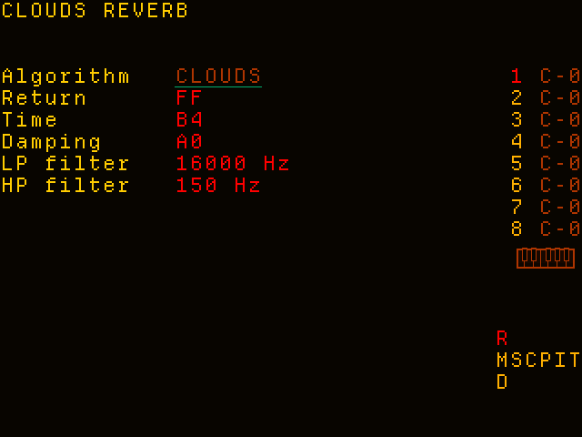
The shared reverb adds space around the mix. Set each track’s send in Mixer, then choose Clouds or Beads and shape the common reverb here.
On this screen
- Algorithm
- Clouds or Beads; each retains its own controls.
- Return
- How much wet reverb reaches the master mix.
- Time
- Length of the reverb tail.
- Damping / Tone
- Clouds high-frequency damping or Beads feedback-filter tone.
- LP / HP filters
- Clouds provides low-pass and high-pass filters; Beads provides a pre-reverb high-pass filter.
| Control | What it does |
|---|---|
| Select a reverb parameter. | |
| Adjust its value. | |
| Return to Mixer. | |
| The algorithm changes and the page shows its corresponding controls. |
In depth
Open a topic for detailed controls, values and workflows.
Reverb
Use SELECT + [UP] from Mixer to open the reverb settings screen.
- Algorithm: selects Clouds or Beads. Each algorithm keeps its own controls.
- Return: wet reverb level in the master mix.
- Clouds: Time, Damping, plus pre-reverb LP and HP filters.
- Beads: Time, native feedback-filter Tone, and a pre-reverb HP filter.
This is the send reverb section, not the Clouds or Beads granular processor.
Delay
Mixer → SELECT + DOWN

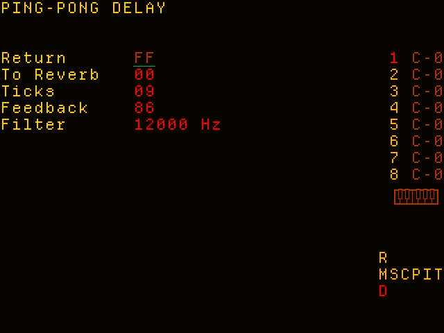
The shared ping-pong delay adds repeats that cross between left and right. Track sends control what enters the delay; this page controls its timing, feedback, and return.
On this screen
- Return
- Wet delay level in the mix.
- To Reverb
- Send some of the delayed signal into the shared reverb.
- Ticks
- Delay time measured in tracker ticks.
- Feedback
- How strongly each repeat feeds the next.
- Filter
- Low-pass filtering of the delayed signal.
| Control | What it does |
|---|---|
| Select a delay parameter. | |
| Adjust its value. | |
| Return to Mixer. |
In depth
Open a topic for detailed controls, values and workflows.
Ping-pong Delay
Use SELECT + [DOWN] from Mixer to open Delay, then SELECT + [UP] to return. Reverb works in the opposite direction: SELECT + [UP] opens it and SELECT + [DOWN] returns to Mixer.
- Return: wet delay level.
- To Reverb: amount of the wet delay signal sent into the shared reverb,
0-100%. - Ticks: delay time in tracker ticks (
9 ticks=1 beatby default). - Feedback: cross-feedback amount, limited to
95%. - Filter: low-pass filter in the delayed signal path.
The 1st repeat follows the stereo input. Later feedback crosses between the left and right channels.
Project
Song → SELECT + UP

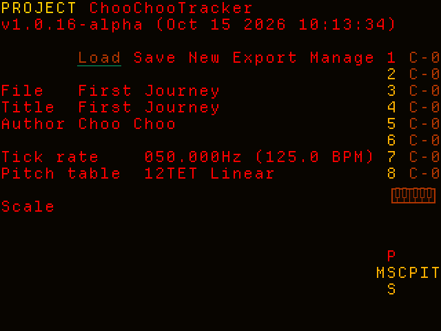
Manage the song as a file and set its musical foundations. This page holds project identity, timing, tuning, and the entry points for exporting and cleanup.
On this screen
- Load / Save / New
- Open a project, save your work, or start a fresh project.
- Export / Manage
- Render audio or open project cleanup.
- File / Title / Author
- File name and descriptive project metadata.
- Tick rate
- The speed of the tracker clock; the page also shows the resulting BPM.
- Pitch table / Scale
- Open tuning and scale settings.
| Control | What it does |
|---|---|
| Choose a command or field. | |
| Activate a command or open a text/value editor. | |
| Change characters or numerical values. | |
| Return to Song. |
Save the project as a .cct file to keep the arrangement, instruments, and project settings together.
In depth
Open a topic for detailed controls, values and workflows.
Project page spacing
The Project page puts the application version on its own line and separates Load, Save, New, Export and Manage from the project metadata with blank rows. Cursor positions and touch targets follow the displayed fields; project settings and file operations are unchanged.
Project files
The Project screen provides Load, Save, New, Export, Manage and Scale commands, along with filename, title and author metadata.
Importing and exchanging songs
Load also accepts .mid/.midi files, imported as a new project: notes are grouped by MIDI channel (one channel per track, up to the track count), quantized to 4 rows per beat, and placed on a single default AY instrument - MIDI program numbers have no chiptune equivalent, so pick real instruments afterward. Only the file's first tempo is used (one global tick rate, no per-section tempo changes). The Export screen's MIDI row does the reverse: writes the current arrangement's notes, volume and tempo/groove as a Standard MIDI File (one MIDI track per tracker track); MIDI Out instruments and other per-row FX beyond volume and the global groove have no MIDI equivalent and are not translated.
Load also accepts Dirtywave M8 songs (.m8s, firmware 2.x-4.x), imported as a new project. Only the structure and the notes come across (song rows, chains with their transpose, phrases with note, velocity and instrument number, note-offs, tempo and song name); notes keep their real pitch (the M8 names octaves two higher: its C-6 is C-4 here). Each instrument used by a phrase is imported under the M8 instrument's name. M8 MACROSYN instruments become Braids instruments (the 47 shapes are the Braids models, same numbers; timbre, color, filter type, cutoff, resonance and pan are carried over, the cutoff curve being approximate). SAMPLER instruments become Sample instruments: the .m8s only stores the path of the WAV on the M8 card, so the file is searched under the folder of the .m8s and its parents (a copy of the card layout works) and in your current sample folder (Samples or samples both work); if it is not found the instrument keeps the M8 path and stays silent. Imported samples get +24 semitones in their Pitch setting, as the M8 plays a sample at its original pitch two octaves lower than this app does. FMSYNTH becomes a Genesis FM instrument (rough approximation), WAVSYNTH and HYPERSYNTH become aChChid. MIDI OUT becomes a MIDI Out instrument (channel, bank, program and the first four CC numbers). Other types (external) become a default AY instrument - pick real sounds afterward. FX and tables are ignored.
Load also accepts Little Sound Dj songs (.lsdsng, one song per file), imported as a new project. Picking a whole LSDj save (.sav, up to 32 songs) opens a list of its songs (slot, name, version, size); pick one to import it (the song being edited when the cartridge was saved is not listed). Only the structure and the notes come across (song rows, chains with their transpose, phrases with note and instrument number, tempo and song name); every note gets full volume, as LSDj has no note volume, and the four LSDj channels PU1, PU2, WAV and NOI become tracks 1-4. Pulse instruments become GB Pulse (duty, envelope and panning are carried over; the pulse sweep is not), noise instruments become GB Noise (envelope, stability and panning), wave instruments become the GB Pulse Hollow Lead preset and kits a default GB Noise. The grooves are imported, and the phrase commands C (chord), D (delay), E (pulse and noise envelope, not on the wave channel), G (groove), K (kill) and V (vibrato) become ARP, DEL, CEI/CEP/CED, GGR, KIL and PVB. The other commands (A, F, H, L, M, O, P, R, S, T, W, Z), tables, wave frames, kit samples and synth settings are ignored, so a song relying on them will sound different. The tempo is converted for a 6-tick groove.
On desktop and Android, the Export screen's LSDJ row does the reverse, in a limited way: tap it and pick an existing .lsdsng as a template (remembered until you quit, EDIT + OPT forgets it). Its song rows, chains, phrases, tempo and title are replaced and everything else (tables, grooves, waves, kits, synth settings) is kept as is. Tracks 1-4 become PU1, PU2, WAV and NOI; GB Pulse and GB Noise instruments are written back as LSDj pulse and noise instruments, any other instrument type as a default pulse instrument. FX, note volumes and note-offs are not exported, and a song using chain 80 or above or phrase FF or above cannot be exported (LSDj has 128 chains and 255 phrases). The exported file has not been tested in LSDj itself yet.
On desktop, the Export screen's M8S row does the reverse, in a limited way: tap it and pick an existing .m8s as a template (remembered until you quit, EDIT + OPT forgets it). Its song, chains, phrases, tempo and title are replaced and everything else is kept as is, except that Braids instruments are written back as MacroSynth and Sample instruments as Sampler (path /Samples/<file name>: copy the WAV there on the M8 yourself), provided the template has an instrument of that type to copy the other parameters from. FX are not exported, and a song using phrase FF or above cannot be exported (the M8 has 255 phrases). The exported file has not been tested on a real M8 yet. See M8 songs for the details.
On desktop, key jazz lets you type the filename, title and author directly on the keyboard instead of using the on-screen virtual keyboard — see Key jazz.
Scale
Project → Scale

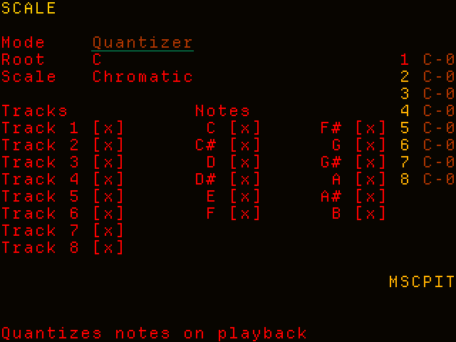
Choose a musical root and scale, then decide which tracks follow it. Quantizer changes the notes heard during playback; Note Lock restricts the notes entered into phrases.
On this screen
- Mode
- Quantizer or Note Lock.
- Root / Scale
- The root pitch class and scale preset.
- Tracks
- Enable the scale for individual tracks.
- Notes
- Inspect or edit the scale’s allowed pitch classes.
| Control | What it does |
|---|---|
| Move between mode, scale, track, and note fields. | |
| Change the selected setting. | |
| Include or exclude a track or pitch class. | |
| Return to Project. |
Quantizer preserves the notes stored in your phrases. Note Lock affects new note entry; changing its scale does not rewrite existing notes.
In depth
Open a topic for detailed controls, values and workflows.
Scale / Quantize
The Scale screen controls the global 12-TET scale engine. The Mode row selects between two modes:
- Quantizer (default): phrase entry remains chromatic; when enabled, notes are rounded downward immediately before reaching the sound engine, so changing root or scale reharmonizes a song without editing its phrases.
- Note Lock: notes typed into phrases are snapped to the nearest note of the scale as they are entered, so only scale notes can be written. Fresh entries and decreases snap down;
EDIT + RIGHT/EDIT + UPraise the note to the next scale note above. Entry always follows the project scale on this screen: changing the root or scale immediately affects newly entered notes on the enabled tracks, while notes already stored stay untouched.SCLFX is unavailable in this mode and anySCLalready written is ignored. Playback quantization of plain notes is bypassed (entry is already locked); chord quantization viaCRDstill applies.
With the cursor resting on Mode, the status bar keeps a fixed description of the active mode visible: Quantizes notes on playback for Quantizer, Snaps sequencer to scale for Note Lock. Toggling the mode swaps the text immediately; any action message replaces it until it expires.
Both modes share the same root, scale, Custom note editing and track checkboxes. Each of the eight track checkboxes decides which tracks the mode applies to. The scale engine is bypassed for non-12-note pitch tables and for Sampler instruments whose Slice mode is EQUAL, AUTO or LAZY (their notes select slices chromatically from C-0); MIDI input is not part of this version.
- Linear pitch selects the pitch-table mode. Off is the default and the hardware-validated setting for correct AY, Braids and Plaits octave tracking.
- Tick rate sets tracker timing and displays the corresponding BPM (
tick rate x 60 / 24). - ChooChooTracker saves projects as
.cct. This format is not compatible with ChipNomad.
Use Save before changing instrument types or loading another project.
Scale and chord automation
See Scale automation for SCL and Chords for CRD. Note Lock changes note entry; it does not rewrite earlier notes.
Pitch table
Project → Pitch table

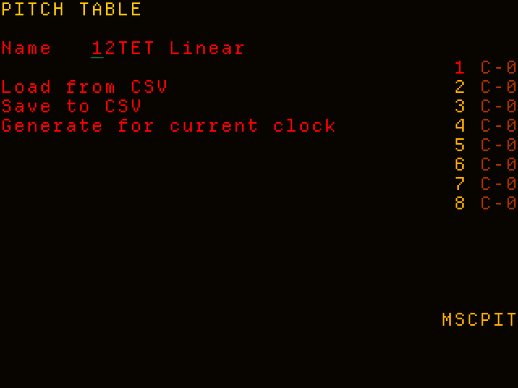
The pitch table defines the tuning used by the project. Keep the default for ordinary note entry, or load an alternative tuning from a CSV file.
On this screen
- Name
- A label for the current tuning.
- Load from CSV / Save to CSV
- Import or export a pitch table.
- Generate for current clock
- Rebuild a pitch table for the current chip clock.
| Control | What it does |
|---|---|
| Choose the name or a file/generation command. | |
| Edit the name or activate the selected command. | |
| Return to Project. |
File browser
Open a Load command

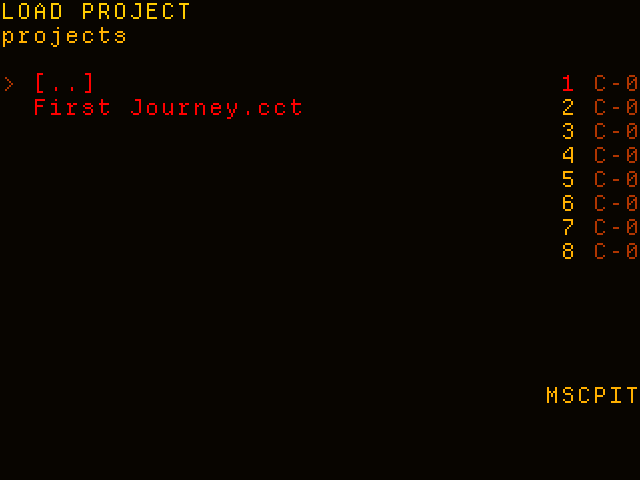
The same browser is used to find projects, presets, samples, and other assets. Its title tells you what is being loaded, and the list is filtered for the relevant file type.
On this screen
- Folder / file list
- Browse available folders and matching files.
- Current path
- Shows where you are in the file hierarchy.
| Control | What it does |
|---|---|
| Highlight a folder or file. | |
| Open the highlighted folder or select the file. | |
| EDIT on [..] | Go up to the parent folder. |
| Cancel and return to the page that opened the browser. |
In depth
Open a topic for detailed controls, values and workflows.
Directory configuration
| Folder | What it contains |
|---|---|
AY_Wavetables |
.aywave AY chip wavetables |
fonts |
.cnfont ChipNomad font files |
instruments |
.cni instrument presets, including ChipNomad files |
pitch-tables |
.csv alternative tunings |
projects |
.cct song and project files |
samples |
.wav files for the Sampler engine |
SR_wavetables |
Serum-format wavetables for the BYOWTBL engine |
themes |
.cth ChipNomad themes |
title |
Title screen assets |
waveforms |
.wav single-cycle waveforms for the 2xSCWF engine |
Importing native FM presets
For a local external bank, use tools/chip_banks/import_bank.py SOURCE --output
NEW_DIRECTORY --writer tracker/build/tests/chip_factory. It accepts strict
42-byte TFI, VOPM OPM text, the verified WOPLX format and original-DX7 SysEx.
Load the resulting .cni files through Load Instrument. User imports are kept
separate from the distributable factory library. OPM files with noise enabled,
nonzero noise-frequency data or partial panning are rejected with an explanation;
VOPM pan values 0/64/127 become left/both/right. Binary WOPL is not supported.
The shared FM catalogue contains 1,064 entries: 697 OPL, 67 DX7, 146
OPLL/VRC7, 73 Genesis and 81 Arcade. Another 76 files expose the Sega/Game Boy
presets through the normal file browser, for 1,140 packaged native presets.
Source revisions, hashes, full notices and original source data accompany the
new collections under licenses/chip-banks/expansion.
Portable factory collections and USER presets
Native chip instruments use Bank: to choose ALL, an included collection or USER. Preset: chooses a sound within that selection. Hold EDIT and press Left or Right on either row to cycle; a short EDIT tap opens its chooser.
Included collections are ZIP packs under instruments/FACTORY/. USER files go
under instruments/USER/<engine>/: dx7, opll, vrc7, opl2, opl3,
genesis, arcade, sid, sega, gb-pulse, or gb-noise.
Browse folders directly or put a ZIP of compatible presets there. ZIPs remain
intact on disk. All these folders accept compatible .cni files; CNI is
ChooChoo/ChipNomad's portable instrument format, not a chip manufacturer's standard.
The USER browser also reads the following source formats, including inside ZIPs:
| USER folder | Additional formats |
|---|---|
dx7 |
Yamaha DX7/TX7 .syx single voices and 32-voice banks |
genesis |
.tfi, DefleMask .dmp, Furnace .fui |
arcade |
VOPM .opm banks, DefleMask .dmp, Furnace .fui |
opl2, opl3 |
.wopl, .opli, .woplx, .sbi, Furnace .fui |
opll, vrc7 |
Furnace .fui custom patches and fixed ROM selections |
sega, gb-pulse, gb-noise |
Furnace .fui, DefleMask .dmp |
sid |
GoatTracker 2 .ins (GTI5), Furnace .fui |
A bank opens into compatible voices. Unsupported files or features report a reason; incompatible voices in a mixed bank are excluded while their source numbers remain stable. Loading is transactional: a rejected preset leaves the current instrument unchanged. Source presets replace the instrument's tracker table with an empty one, except DX7 SysEx, which preserves its existing table. CNI restores its saved table. Loaded patches are owned by the song and continue to work after moving or deleting the source pack.
WOPL banks can contain unused slots without an explicit blank flag. The browser
omits unnamed slots whose active operators are fully attenuated and have no
attack. Unnamed playable voices remain available as Program N [Bbank] or
Drum N [Bbank], using the source's zero-based program and bank numbers.
An unnamed single OPLI instrument uses its filename. Named silent patches are
retained.
Furnace support covers legacy single-instrument versions 29–112 and feature-based
FINS versions 127–251. DefleMask support covers version 11 OPN, OPM, Sega PSG
and Game Boy instruments. These are instrument imports, not complete tracker
players: animated FM/operator macros, source-song FM LFO settings, samples,
Game Boy hardware command sequences, relative SID pulse/filter macros and SID
ring/sync dependencies are currently rejected. Constant OPLL ROM selection is
supported; VRC7 uses its own ROM for that selection. SID-Wizard .swi and SID
music files (.sid) are not instrument imports in this build.
Supported PSG/GB/SID sequences are stored in the patch and played at 60 Hz for Furnace/DefleMask and 50 Hz for GoatTracker. Those files do not carry a complete song's playback configuration: use the original tracker when its song-specific tick rate, channel routing, hard-restart behavior or compatibility settings are required. For Sega PSG, a duty macro selects the noise voice; without one the import uses a tone voice. Game Boy files must be placed in the intended pulse or noise folder. Imported sequences currently remain embedded playback data; the instrument page edits base parameters, not the source tracker tables.
USER preset cycling continues across files, folders, banks and ZIP packs in
both directions, wrapping at the ends. Reopening the USER browser follows the
current selection. ALL includes USER sounds under Unsorted for categorized
engines; USER remains a separate top-level choice. Sega PSG and Game Boy use
flat ALL/Factory lists and a hierarchical USER browser, without an Unsorted
panel. Older DX7 files in instruments/banks/dx7/ remain accessible in USER.
An engine shows only its compatible included collections. Factory Presets combines the included OPLL/VRC7 tone sets for the selected engine; DX7 combines ChooChoo and YSE originals. Downloaded named collections remain separate. Fat Man 2-op is listed under OPL2 and Fat Man 4-op under OPL3. Compatible OPL2 CNI files may still be used in OPL3 USER folders.
Native-engine output uses fixed measured gain compensation rather than
per-preset normalization. Existing native-instrument songs can therefore play
at a different level; review the balance of saved mixes. The calibration method
and bounds are documented in scripts/README_MEASURE.md.
native-chip-audition.cct provides a short sequential audition across the original
thirteen factory banks. Each section uses a different owned instrument, so it works with
the preset folder removed. Longer ignored bank WAVs and measured levels are
listed in docs/chip-preset-auditions.tsv; subjective listening remains pending.
Export
Project → Export

Render the arrangement to a WAV file, or export separate track stems for further mixing. Choose the start position, audio format, and destination before starting.
On this screen
- Start row
- The Song row where the export begins.
- WAV — Song / Stems
- Render a combined mix or separate tracks.
- Sample rate / Bit depth
- The format of the rendered audio.
- Folder
- Destination for exported files.
- MIDI
- Export the arrangement as a Standard MIDI File; audio-engine sound design is not carried across.
| Control | What it does |
|---|---|
| Select the export setting or format. | |
| Adjust start row, sample rate, or bit depth. | |
| EDIT on Folder | Choose an export folder. |
| OPT + EDIT on Folder | Restore the default export location. |
| EDIT on Song / Stems | Start the selected WAV export. |
| OPT while rendering | Cancel the export. |
For a smaller section, select rows in Song, Chain, or Phrase and double-tap EDIT to open Bounce to Sample. Desktop builds also display platform-specific export options.
In depth
Open a topic for detailed controls, values and workflows.
Bounce to Sample

Select a range of Song rows and columns, then double-tap EDIT to open the BOUNCE TO SAMPLE screen. The bounce includes every selected track: tracks whose first chain starts later in the selection wait silently and join at their first chain, so the file contains all selected tracks' chains.
The screen offers:
- File name: edit with the character keyboard. When the screen opens, the next free sequence number (
001,002, ...) is proposed here: the first number whose.wavfile does not exist yet in the export folder. Edit it freely — the name is used as-is. If a file with that name already exists, a_001,_002, ... suffix is added so existing files are never overwritten. The counter resets when you load or create a project. - Sample rate and Bit depth: the same options as the export screen
- Include in a sample name: three checkboxes that prepend context tags to the file name when Start is pressed (all off by default):
- [BPM] — the project's current tempo, e.g.
[120] - [Key] — the project's root note and scale, e.g.
[Cmaj],[F#min Pent] - [Bars:Beats:16ths] — the rendered length of the bounce: one phrase equals one bar (16 sixteenths), a beat is 4 sixteenths. Full phrases show only bars, e.g.
[2]; partial phrases show[0:2](two beats) or[0:1:3](one beat plus three sixteenths). For multi-track bounces the longest track decides. A selection ending mid-beat counts one sixteenth less: the last selected row is the cut point, so its note-off lands at the end of the previous sixteenth. - Tags are applied in the order
[BPM][Key][Length]before the file name.
- [BPM] — the project's current tempo, e.g.
- Start: render the selection to a WAV file in the export folder (see Export location under Project screen)
- Cancel: return without bouncing
While the bounce renders, OPT cancels it. When the bounce completes or is cancelled, the screen you bounced from returns.
On desktop, key jazz also brings direct hex-index typing plus Phrase-style Shift+arrows selection, Delete/Backspace/Insert and Ctrl+C/X/V here — see Key jazz.
Export location
Exports, stems and bounces are written to a per-project folder inside the app's preexisting samples directory:
- Default:
<app folder>/samples/Exports/<project name>/. While the project is unnamed, the folder iscurrent-project. - On the web build the default is
/user/samples/Exports/<project name>/. - On Android the samples folder is inside the app's workspace: private to the app in the Play Store build,
samplesin the folder you picked in the direct APK / F-Droid build.
The Folder row on the EXPORT screen shows the active destination:
- Tap EDIT to pick a custom folder with the folder browser. The chosen folder is used exactly as selected (no project subfolder is added) and is remembered in settings.
- EDIT + OPT (clear) resets to the default location.
When a named project is saved under a new name, the default export folder is renamed to match, keeping previously exported files with the project. Renaming does not apply to a custom folder, and the folder is not renamed by autosave. If a folder with the target name already exists, both folders are kept. If the tracker lost track of the folder (for example after a restart), saving a named project renames the existing current-project folder instead. Instruments keep working after a rename: loaded sample paths that point into the renamed folder are updated automatically.
Exchange formats
For MIDI, M8 and LSDj import/export, including template requirements and features that do not transfer, see Importing and exchanging songs.
Manage project
Project → Manage

Clean up the project after editing. Remove unused material and consolidate duplicate pattern data to make the project easier to maintain.
On this screen
- Phrases and Chains
- Clean unused and duplicate phrases/chains.
- Instruments and Tables
- Clean unused instruments and tables.
- Import project / Import WAV
- Android file-import entries. These require the Android build.
| Control | What it does |
|---|---|
| Choose a cleanup operation. | |
| EDIT | Run the selected cleanup flow. |
| Return to Project. |
Save a copy before cleanup if you want to keep unused sketches for later.
In depth
Open a topic for detailed controls, values and workflows.
Android working folder
In the direct APK / F-Droid build, Settings > Working folder shows whether the
app uses a folder you picked (FOLDER) or its private storage (PRIVATE). Press
EDIT on it: with PRIVATE the system folder picker opens; with FOLDER a small
dialog offers Choose another folder or Use private storage. When a new folder is
picked the app offers to copy your files from the current workspace (existing files in
the new folder are kept), then restarts on it. Going back to private storage keeps the
files in the old folder. If you cancel the picker on first launch, the app keeps using
private storage and does not ask again. In the Play Store build the row reads N/A.
Moving a project safely
Save the project and save any edited WAVs before moving them. Keep externally referenced samples and SoundFont/SFZ/EXS sample libraries with their relative paths. Download a .cct backup from the browser and keep a separate copy of your USER library; browser storage is not a portable backup. For supported archive layouts, see Factory and USER presets.
Settings
Song → SELECT + DOWN

Application preferences are grouped by purpose. Start here to change control mapping, audio behaviour, display appearance, or MIDI connections.
On this screen
- Controls
- Input repeat timing, stick live behaviour, and mapping.
- Audio
- Audio buffer size and a CPU readout.
- MIDI
- Input/output devices and mapping pages.
- Synths
- AY quality and Braids character settings.
- Mixer
- Overall mix volume and tilt pivot frequency.
- Graphics
- Theme, font, and display preferences.
- Support report / Quit ChooChooTracker
- Save diagnostic information or close the app.
| Control | What it does |
|---|---|
| Choose a settings category. | |
| Open the category or activate the selected command. | |
| Return to Song. | |
| The display preference changes; capture defaults remain waveform-off. |
In depth
Open a topic for detailed controls, values and workflows.
Optional 16x24 fonts and NostromoAmberDa2
Settings → Load font → fonts/Pixel16x24 contains TechMonoAudit (converted from Share Tech Mono), Departure Mono, Spleen and Cozette. Each supplies the complete printable ASCII set in 16×24 cells for a 640×480 display. Pixel-built fonts keep their native pixels or integer scaling with padding; Cozette remains smaller because doubling its 13-pixel ink height would exceed the cell. The NostromoAmberDa2 theme is available through Settings → Edit color theme → Load. It retains the Nostromo amber background and informational text, with red primary text, darker orange values and a teal cursor. Loading the assets does not change your selected font or theme. See the accompanying README.txt for attribution and licenses.
Song waveform
Graphics → Song waveform is OFF by default. Tap EDIT to toggle it, or use EDIT + direction; the choice is saved as an app preference. When enabled, a two-row waveform above the SONG page shows the final mix summed to mono. All other pages retain their full-height layouts, normal spacing and instrument previews regardless of this option. The saved preference remains compatible with earlier versions. SONG touch targets follow the displayed rows in both modes.
Playback piano
A code-drawn pixel piano below the eight right-side track rows lights sounding pitch classes, folded into one octave. It includes chord notes and respects muted/stopped tracks. The outline uses the theme value color and all active keys use the waveform color; idle keys have dark fills and subtle shadows. Its grid uses integer scaling and fixed-width borders. The piano is a playback indicator, not a note-entry control. Popups and the wavetable editor keep their own content in this area.
Preferences and support reports


- Repeat delay / speed tune held-button repeat.
- Stick live mode selects
HOLD,TOGGLE, orFREEfor the existing mapped Stick live button. - MIDI opens the MIDI submenu: device selection and the MIDI In channel-to-instrument mapping.
- Synths contains AY Quality, Sample dithering, and global Braids BITS / DRFT / SIGN settings.
- Mixer contains Mix volume and the per-project
250-4000 HzTilt pivot (default1 kHz) used by all Mixer Tilt controls. - Graphics contains Edit color theme, Load font, Song waveform, Track visuals, Waveform FPS, and the active renderer (
GPUorSoftware). Waveform FPS sets the refresh rate of the instrument scope and mixer visualizers from01to60. Track visuals selects Detailed (the synth waveform and its overlays) or Audio waveform (the actual summed output of that track) independently for every track; audio waveform clears any prior ADSR overlay immediately when playback starts. ChipNomad fonts and themes should work. - Key mapping customises the controls.
- Support report writes a small diagnostic text file with the app version, platform, audio settings and CPU load, playback/overflow state, and a compact project summary. It does not include sample data or project title/author text. On Android and Web it opens the normal export/download flow; desktop and handheld builds save
support-report.txtin the app's writable folder. - Quit ChooChooTracker exits cleanly.
Graphics → Boot screen selects Original (default) or Night. Tap EDIT or use EDIT + direction to change it; the choice is saved for the next title screen. Night uses the original railway scene with softer blue-gray tones, a procedural Milky Way with subtle star twinkles and occasional shooting stars. The original scenery and train keep their scrolling loops.
Credits and licensing
ChooChooTracker is a fork of ChipNomad and retains its MIT licensing approach. Braids, Plaits, Plaits-Alt, Clouds DSP, Warps-derived MME DSP and stmlib code are derived from Mutable Instruments' open-source releases under their applicable MIT notices. Plaits-Alt is sourced from the lylepmills/eurorack Plaits Lab fork; its retained source notices apply. The aChChid engine uses Open303 by Robin Schmidt, copyright 2009, under the MIT License. Bogie and Sintered are original native implementations. MIDI I/O uses RtMidi by Gary P. Scavone, under its MIT-style license. See the packaged license files for exact attribution.
Upstream MIT license
MIT License Copyright (c) 2025 ChipNomad Copyright (c) 2026 paiheulevrai Permission is hereby granted, free of charge, to any person obtaining a copy of this software and associated documentation files (the "Software"), to deal in the Software without restriction, including without limitation the rights to use, copy, modify, merge, publish, distribute, sublicense, and/or sell copies of the Software, and to permit persons to whom the Software is furnished to do so, subject to the following conditions: The above copyright notice and this permission notice shall be included in all copies or substantial portions of the Software. THE SOFTWARE IS PROVIDED "AS IS", WITHOUT WARRANTY OF ANY KIND, EXPRESS OR IMPLIED, INCLUDING BUT NOT LIMITED TO THE WARRANTIES OF MERCHANTABILITY, FITNESS FOR A PARTICULAR PURPOSE AND NONINFRINGEMENT. IN NO EVENT SHALL THE AUTHORS OR COPYRIGHT HOLDERS BE LIABLE FOR ANY CLAIM, DAMAGES OR OTHER LIABILITY, WHETHER IN AN ACTION OF CONTRACT, TORT OR OTHERWISE, ARISING FROM, OUT OF OR IN CONNECTION WITH THE SOFTWARE OR THE USE OR OTHER DEALINGS IN THE SOFTWARE.
Controls
Settings → Controls

Make navigation feel comfortable and assign logical controls to your own keys or gamepad. All control names in this guide refer to these actions, so the guide still applies after remapping.
On this screen
- Repeat delay
- How long a held direction waits before repeating.
- Repeat speed
- The rate of repeated movement.
- Stick live mode
- Hold, Toggle, or Free behaviour for live stick modulation.
- Key mapping
- Assign the physical inputs that trigger each named action.
| Control | What it does |
|---|---|
| Choose a setting. | |
| Adjust timing or stick behaviour. | |
| Open the mapping editor. | |
| Done, in Key mapping | Save the new assignments. |
In the mapping editor, release the input used to select an action before pressing its new assignment.
In depth
Open a topic for detailed controls, values and workflows.
Controllers and touch controls
Mappings can be changed in Settings → Controls → Key mapping. On PortMaster, release the button used to select a mapping before pressing the new button. Save a remap with Done, then release the button before continuing in Settings. Desktop layout defaults use QWERTZ only for QWERTZ regions; Polish keyboards keep the standard QWERTY defaults.
Windows, web, and Android users can also use a game controller. On Android,
touch controls appear automatically when no gamepad is connected: in portrait
they sit below the tracker, with a square D-pad, A/EDIT, B/OPT, START/PLAY and
SELECT/SHIFT controls, then a separate Live/Motion section with two modulation
sticks and momentary REC/DEL controls. Landscape keeps the D-pad on the left
and the action buttons on the right. In the Play Store build, Android projects and samples stay private to
the app; the direct APK / F-Droid build asks you on first launch to pick one folder
(system folder picker, no extra permission) and keeps them there, where your file
manager or PC can reach them. The bundled banks and demo content stay inside the app. In both builds, use the Android file picker to import .cct projects and .wav samples,
and to choose where WAV exports are saved.
Input feels wrong
Adjust Repeat delay and Repeat speed in Settings. If a single press moves twice, check that only 1 physical control is mapped to that direction and report the exact screen and shortcut.
Audio
Settings → Audio

Adjust the audio buffer and watch the processing load. A smaller buffer responds sooner; a larger buffer gives audio processing more time to complete.
On this screen
- Buffer size
- The number of audio frames processed in a block. Choices depend on the platform.
- CPU load
- A read-only indicator of the audio workload.
| Control | What it does |
|---|---|
| EDIT + direction on Buffer size | Select a supported buffer size. |
| Return to Settings. |
If a demanding project crackles, try a larger buffer or reduce its processing load.
In depth
Open a topic for detailed controls, values and workflows.
Understanding the audio displays
Audio readouts use a UI-owned snapshot of the final mix and individual track contributions. Track samples and stereo peaks are captured after track level and tilt, before shared effect returns and master gain. Monitoring does not change the audio signal. The audio callback publishes fixed-size snapshots without locks or allocation; display history spans about 21 ms.
CPU
CPU cost depends on the active engines and effects. Plaits physical models and Clouds Reverb are heavier than basic AY voices. Check performance on the target console, especially with 8 Plaits voices and both sends active. A CPU reading near 100% can cause crackles or missed audio deadlines.
The CPU display is a smoothed measure of audio rendering time. It does not measure delays before the audio callback runs or in the device's audio output, so crackles can occur even with a low reading.
On Android, audio output now prefers AAudio to avoid intermittent crackling observed with OpenSL ES on the Pixel 7a. This buffered output prioritises stable playback and can add some response latency. The tracker canvas keeps its full 4:3 layout on square and other unusual screen ratios; unused space is shown as borders rather than cropping columns. If crackling persists, report the song, phone model, Android version and whether you are using the speaker, headphones or Bluetooth.
If you run into pops, crashes or slowdowns, use Settings > Support report and attach the generated support-report.txt to the bug report. If a specific song triggers the problem, attach that .cct too.
No sound
Check the instrument number, track mute or solo state, track LVL, application Mix volume and instrument envelope. For samples, check that the original WAV still exists at its saved path. On ArkOS, press MENU + L3 to toggle the operating system mute. If that does not help, restart the hardware and reconnect your audio interface.
Handheld workload guidance for native chips
There are eight song tracks and two insert-effect slots per track. The sixteen available slots do not guarantee enough CPU to run sixteen effects. DX7's sixteen-active-note limit is a separate song-wide synthesis budget; chords and release tails count toward it.
In R36H measurements, four looping WAV tracks, Sega PSG, GB Pulse, DX7 and
OPL3 with shared sends and four inserts (two Compressors, Doubler, TAPESCAM)
performed better than dense eight-track FM arrangements. The single-note
version had no render deadline misses in its thirty-second 48 kHz/512-frame
measurement; adding a four-note DX7 chord had one timing spike. Dense FM songs
with many expensive inserts exceeded the CPU budget. Preserve some headroom,
watch the existing overload indicator, and add effects where they help the song.
The app retains every track and slot; there is no new hard limit on insert count.
See chip-instruments-report.md for full measurements and sustained-test status.
The matching 70-second physical audio test of that balanced chord arrangement
passed with no render deadline misses or logged ALSA underruns at the existing
48 kHz / 4906-frame setting. Its worst callback was 81.819 ms against a
102.208 ms deadline. Tests used a separate master gain of 0.4 for headroom.
Keep the regular launcher's direct-card AUDIODEV=plughw:0,0 route: the system's
default shared mixer produced underruns in the diagnostic probes. No user audio
setting was changed. The ten-minute smaller-buffer stress test still recorded
28 timing spikes; the complete results are in the report.
MIDI
Settings → MIDI

Connect MIDI input and output, then decide how incoming notes and controller movements interact with the project. Device availability depends on the platform and connected hardware.
On this screen
- MIDI In / MIDI Out
- Choose an available port, or Off.
- Channel mapping
- Assign incoming MIDI channels to instruments for preview.
- MIDI CC mapping
- Connect controller messages to instrument parameters or global controls.
| Control | What it does |
|---|---|
| Choose a device field or mapping page. | |
| EDIT + direction | Change the selected device. |
| Open that mapping page. | |
| Return to Settings. | |
| The channel mapping changes from Off to an instrument slot. |
To send notes to an external device, use a MIDI Out instrument on a track and choose its MIDI channel.
In depth
Open a topic for detailed controls, values and workflows.
MIDI devices, audition and controller mapping


Desktop, PortMaster and Web MIDI browsers. Settings > MIDI opens this submenu: MIDI In / MIDI Out pick a connected device, cycling through detected ports with OFF at either end; both directions need a device selected. On the Web build, opening this submenu asks the browser for standard Web MIDI permission; a browser without Web MIDI support, or a denied permission, shows its status here and leaves the tracker usable. The selected device name is saved, but its numeric port position is not: the app reconnects only to a port with the same name after a restart or a device change. The app's PLAY control remains available from this screen and starts the song. On PortMaster, connect a USB MIDI device before launching; it must be exposed by the handheld's OS through ALSA. Web MIDI here uses normal channel messages only: no SysEx or MIDI Clock.
- Sound preview from a MIDI keyboard: with a MIDI In device selected, playing notes on the connected keyboard auditions an instrument on any screen, the same as the on-screen EDIT + PLAY shortcut on the Instrument screen. This is preview only - it does not enter notes into the song.
- Channel mapping: opens a list of the 16 MIDI channels; assign each one an instrument (
OFFby default) so notes received on that channel preview that instrument regardless of which one is selected on the Instrument screen - e.g. channel01-> instrument05. A channel leftOFFfalls back to the currently selected instrument, the original behavior. This mapping is saved to settings.txt. - MIDI CC mapping: maps an incoming controller to an instrument parameter, including its Volume, or to global controls. Global rows show
TRK 1-TRK 8instead of an instrument and provide track Mute, Solo, Volume, Reverb send, and Delay send; Song play/stop has no target. A new mapping ignores the CC that learned/configured it and takes effect on the next physical movement, so setting up mappings during playback cannot reset a patch to zero. Mute and solo use0-63= off,64-127= on. - Driving an external MIDI device: give a track the MIDI Out instrument type and set its Channel; triggering notes on that track sends real MIDI to the selected MIDI Out device instead of making sound in ChooChooTracker.